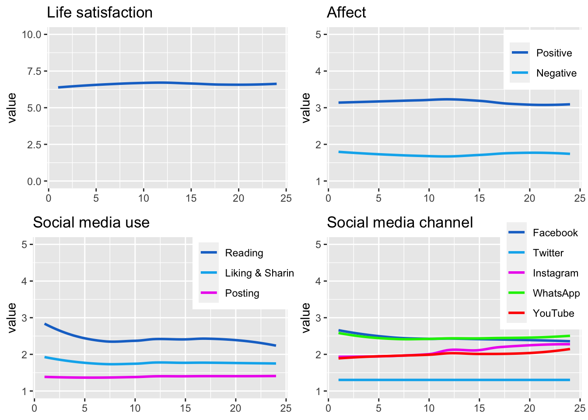
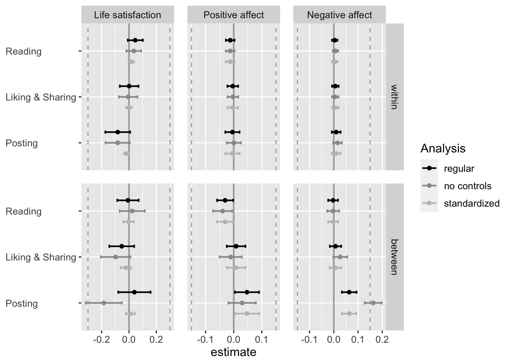
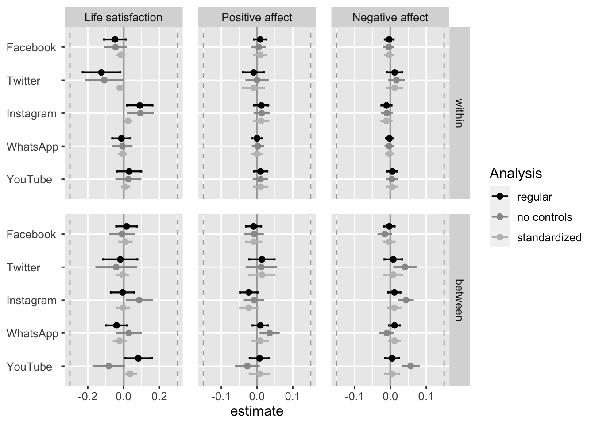
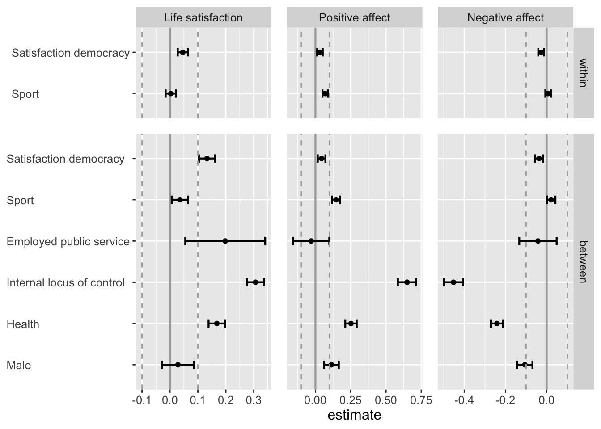

Here you can find the code and the results of all analyses. To see the code, click on button “Code”. Alternatively, you can download the rmd file from the github repo.
Load packages.
# install packages
# devtools::install_github("https://github.com/tdienlin/td@v.0.0.2.5")
# define packages
packages <- c("broom.mixed", "brms", "devtools", "GGally", "ggplot2",
"gridExtra", "kableExtra", "knitr", "lavaan", "lme4",
"magrittr", "mice", #"mvnormalTest",
"PerFit", "psych", "quanteda.textstats", "semTools", "tidyverse")
# load packages
lapply(c(packages, "td"), library, character.only = TRUE)Provide session info to make results reproducible.
sessionInfo()## R version 4.1.3 (2022-03-10)
## Platform: aarch64-apple-darwin20 (64-bit)
## Running under: macOS Monterey 12.3.1
##
## Matrix products: default
## BLAS: /Library/Frameworks/R.framework/Versions/4.1-arm64/Resources/lib/libRblas.0.dylib
## LAPACK: /Library/Frameworks/R.framework/Versions/4.1-arm64/Resources/lib/libRlapack.dylib
##
## locale:
## [1] en_US.UTF-8/en_US.UTF-8/en_US.UTF-8/C/en_US.UTF-8/en_US.UTF-8
##
## attached base packages:
## [1] stats4 stats graphics grDevices utils datasets methods base
##
## other attached packages:
## [1] td_0.0.1 forcats_0.5.1 stringr_1.4.0 dplyr_1.0.8 purrr_0.3.4 readr_2.1.2 tidyr_1.2.0 tibble_3.1.6 tidyverse_1.3.1 semTools_0.5-5
## [11] quanteda.textstats_0.95 psych_2.2.3 PerFit_1.4.6 mirt_1.36.1 lattice_0.20-45 ltm_1.2-0 polycor_0.8-1 msm_1.6.9 MASS_7.3-55 mice_3.14.0
## [21] magrittr_2.0.3 lme4_1.1-29 Matrix_1.4-0 lavaan_0.6-11 knitr_1.38 kableExtra_1.3.4 gridExtra_2.3 GGally_2.1.2 ggplot2_3.3.5 devtools_2.4.3
## [31] usethis_2.1.5 brms_2.16.3 Rcpp_1.0.8.3 broom.mixed_0.2.9.3
##
## loaded via a namespace (and not attached):
## [1] coda_0.19-4 stopwords_2.3 dygraphs_1.1.1.6 data.table_1.14.2 rpart_4.1.16 inline_0.3.19 RCurl_1.98-1.6 generics_0.1.2 callr_3.7.0 future_1.24.0 nsyllable_1.0.1
## [12] tzdb_0.3.0 webshot_0.5.2 xml2_1.3.3 lubridate_1.8.0 httpuv_1.6.5 StanHeaders_2.21.0-7 assertthat_0.2.1 xfun_0.30 hms_1.1.1 jquerylib_0.1.4 bayesplot_1.9.0
## [23] evaluate_0.15 promises_1.2.0.1 fansi_1.0.3 dbplyr_2.1.1 readxl_1.4.0 igraph_1.2.11 DBI_1.1.2 tmvnsim_1.0-2 htmlwidgets_1.5.4 reshape_0.8.8 tensorA_0.36.2
## [34] ellipsis_0.3.2 crosstalk_1.2.0 ks_1.13.4 backports_1.4.1 pbivnorm_0.6.0 permute_0.9-7 markdown_1.1 RcppParallel_5.1.5 vctrs_0.4.0 remotes_2.4.2 abind_1.4-5
## [45] cachem_1.0.6 withr_2.5.0 checkmate_2.0.0 vegan_2.5-7 xts_0.12.1 prettyunits_1.1.1 mclust_5.4.9 mnormt_2.0.2 svglite_2.1.0 cluster_2.1.2 crayon_1.5.1
## [56] pkgconfig_2.0.3 nlme_3.1-155 pkgload_1.2.4 nnet_7.3-17 rlang_1.0.2 globals_0.14.0 lifecycle_1.0.1 miniUI_0.1.1.1 colourpicker_1.1.1 modelr_0.1.8 cellranger_1.1.0
## [67] distributional_0.3.0 rprojroot_2.0.3 matrixStats_0.61.0 loo_2.5.1 boot_1.3-28 zoo_1.8-9 reprex_2.0.1 base64enc_0.1-3 ggridges_0.5.3 processx_3.5.3 png_0.1-7
## [78] viridisLite_0.4.0 bitops_1.0-7 KernSmooth_2.23-20 parallelly_1.30.0 jpeg_0.1-9 shinystan_2.6.0 scales_1.1.1 memoise_2.0.1 plyr_1.8.7 threejs_0.3.3 compiler_4.1.3
## [89] hdrcde_3.4 rstantools_2.2.0 RColorBrewer_1.1-3 cli_3.2.0 listenv_0.8.0 pbapply_1.5-0 ps_1.6.0 Brobdingnag_1.2-7 htmlTable_2.4.0 Formula_1.2-4 mgcv_1.8-39
## [100] tidyselect_1.1.2 stringi_1.7.6 yaml_2.3.5 latticeExtra_0.6-29 bridgesampling_1.1-2 grid_4.1.3 sass_0.4.1 fastmatch_1.1-3 tools_4.1.3 parallel_4.1.3 rstudioapi_0.13
## [111] foreign_0.8-82 GPArotation_2014.11-1 quanteda_3.2.1 posterior_1.2.1 farver_2.1.0 irtoys_0.2.1 digest_0.6.29 shiny_1.7.1 pracma_2.3.8 broom_0.7.12 later_1.3.0
## [122] fda_5.5.1 httr_1.4.2 Deriv_4.1.3 colorspace_2.0-3 rvest_1.0.2 brio_1.1.3 fs_1.5.2 rainbow_3.6 splines_4.1.3 sm_2.2-5.7 expm_0.999-6
## [133] shinythemes_1.2.0 sessioninfo_1.2.2 systemfonts_1.0.4 xtable_1.8-4 jsonlite_1.8.0 nloptr_2.0.0 fds_1.8 rstan_2.21.3 dcurver_0.9.2 testthat_3.1.3 R6_2.5.1
## [144] Hmisc_4.6-0 pillar_1.7.0 htmltools_0.5.2 mime_0.12 glue_1.6.2 fastmap_1.1.0 minqa_1.2.4 DT_0.22 deSolve_1.31 codetools_0.2-18 pkgbuild_1.3.1
## [155] pcaPP_1.9-74 mvtnorm_1.1-3 furrr_0.2.3 utf8_1.2.2 bslib_0.3.1 gtools_3.9.2 shinyjs_2.1.0 survival_3.2-13 admisc_0.26 rmarkdown_2.13 desc_1.4.1
## [166] munsell_0.5.0 haven_2.4.3 reshape2_1.4.4 gtable_0.3.0Find variables in dataset.
find_var <- function(name, data = doc)(
# finds the variables names for an item for each wave
data %>%
filter(Label == name) %>%
select(variable) %>%
unlist() %>%
set_names(sub("\\_.*", "", .))
)Extract characteristics from fitted lmer models.
get_specs <- function(model){
# Get mean, max, and min values
dat <- coefficients(model)$wave
specs <- data.frame(
sd = attr(VarCorr(model), "sc"),
min = min(dat),
max = max(dat),
mean = mean(dat$`(Intercept)`)
)
}Get data from fitted lmer objects for descriptives.
get_dat <- function(model){
coefficients(model)$wave %>%
tibble::rownames_to_column("wave") %>%
rename(value = "(Intercept)") %>%
mutate(wave = as.integer(.$wave),
value = as.numeric(.$value))
} Determine average reliability for measures across waves
get_rel <- function(data, waves=24){
# extract average reliability from lavaan fitted cfa with several groups
reliability(data) %>%
unlist() %>%
matrix(5, waves) %>%
as.data.frame() %>%
set_rownames(c("alpha", "omega", "omega2", "omega3", "avevar")) %>%
summarise(omega = rowMeans(.["omega",])) %>%
return()
}Make graph of variables’ development.
make_graph <- function(model, title, ll, ul, line = FALSE, labels = FALSE, lmer=TRUE, legend=TRUE){
if(isTRUE(lmer)){
dat <- get_dat(model)
} else{
dat <- model
}
graph <-
ggplot(dat, aes(wave, value, color = dimension)) +
{if(legend) theme(
legend.position = c(0.85, 0.8),
legend.title = element_blank()
)} +
{if(!legend) theme(
legend.position = "none"
)} +
theme(axis.title.x=element_blank()) +
coord_cartesian(ylim = c(ll, ul)) +
ggtitle(title) +
{if(line) geom_smooth(se = FALSE, method = 'loess')} +
# geom_point() +
scale_color_manual(values=c("dodgerblue3", "deepskyblue2", "magenta2", "green2", "red"))
graph
}Get data of lmer objects for results.
# get data
get_dat_res <- function(data_aff_neg, data_aff_pos, data_life_sat, type, analysis = NULL){
if(isTRUE(class(data_aff_neg) == "lmerModLmerTest")) {
dat_fig_results <-
broom.mixed::tidy(data_aff_neg, conf.int = T) %>%
mutate(dv = "aff_neg") %>%
rbind(
broom.mixed::tidy(data_aff_pos, conf.int = T) %>%
mutate(dv = "aff_pos")) %>%
rbind(
broom.mixed::tidy(data_life_sat, conf.int = T) %>%
mutate(dv = "life_sat"))
} else{
dat_fig_results <-
data_aff_neg %>%
mutate(dv = "aff_neg") %>%
rbind(data_aff_pos %>%
mutate(dv = "aff_pos")) %>%
rbind(data_life_sat %>%
mutate(dv = "life_sat")) %>%
rename(conf.low = `2.5 %`, conf.high = `97.5 %`)
}
dat_fig_results %<>%
mutate(
type = ifelse(grepl(".*_w\\>", .$term), "within", "between"),
iv = gsub("_(w|b)\\>", "", .$term)
) %>%
mutate(
type = factor(.$type,
levels = c("within", "between")),
dv = factor(.$dv,
levels = c("life_sat", "aff_pos", "aff_neg"),
labels = c("Life satisfaction", "Positive affect", "Negative affect")),
Analysis = analysis
) %>%
select(dv, iv, type, Analysis, estimate, conf.low, conf.high, p.value)
# select Social Media type of activity
if(type == "activity") {
dat_fig_results %<>%
filter(iv %in% c("soc_med_read", "soc_med_like_share", "soc_med_post")) %>%
mutate(
iv = factor(.$iv,
levels = c("soc_med_post", "soc_med_like_share", "soc_med_read"),
labels = c("Posting", "Liking & Sharing", "Reading"))
)
} else if(type == "channels"){
dat_fig_results %<>%
filter(iv %in% c("soc_med_fb", "soc_med_ig", "soc_med_wa", "soc_med_yt", "soc_med_tw")) %>%
mutate(iv = factor(.$iv, levels = c("soc_med_yt", "soc_med_wa", "soc_med_ig", "soc_med_tw", "soc_med_fb"), labels = c("YouTube", "WhatsApp", "Instagram", "Twitter", "Facebook")))
} else if(type == "control"){
dat_fig_results %<>%
filter(iv %in% c("male", "health", "loc_cntrl_int_m", "employment_facPublic service", "act_spo", "sat_dem")) %>%
mutate(iv = factor(.$iv, levels = c("male", "health", "loc_cntrl_int_m", "employment_facPublic service", "act_spo", "sat_dem"),
labels = c("Male", "Health", "Internal locus of control", "Employed public service", "Sport", "Satisfaction democracy")))
}
return(dat_fig_results)
}Make graph of effects
make_graph_res <- function(data, sesoi = NULL, legend = TRUE){
ggplot(data, aes(x = estimate, y = iv)) +
scale_color_manual(values = c("black", "grey60", "grey75", "deepskyblue", "cornflowerblue", "darkcyan", "aquamarine")) +
geom_vline(xintercept = 0, lwd = .75, colour = "darkgrey") +
geom_errorbarh(aes(xmin = conf.low, xmax = conf.high, color = Analysis),
lwd = .75, height = .2, position = position_dodge(-.7)) +
geom_point(aes(color = Analysis), size = 2, position = position_dodge(-.7)) +
{if(isTRUE(sesoi == "est")) geom_vline(data=filter(data, dv=="Life satisfaction"), aes(xintercept=-.3), colour="darkgrey", linetype = "dashed")} +
{if(isTRUE(sesoi == "est")) geom_vline(data=filter(data, dv=="Life satisfaction"), aes(xintercept=.3), colour="darkgrey", linetype = "dashed")} +
{if(isTRUE(sesoi == "est")) geom_vline(data=filter(data, dv!="Life satisfaction"), aes(xintercept=-.15), colour="darkgrey", linetype = "dashed")} +
{if(isTRUE(sesoi == "est")) geom_vline(data=filter(data, dv!="Life satisfaction"), aes(xintercept=.15), colour="darkgrey", linetype = "dashed")} +
{if(isTRUE(sesoi == "std")) geom_vline(aes(xintercept=.1), colour="darkgrey", linetype = "dashed")} +
{if(isTRUE(sesoi == "std")) geom_vline(aes(xintercept=-.1), colour="darkgrey", linetype = "dashed")} +
theme(
axis.title.y = element_blank(),
plot.title = element_text(hjust = .5),
panel.spacing = unit(.9, "lines"),
text = element_text(size = 12),
axis.text.y = element_text(hjust = 0)
) +
{if(!isTRUE(legend)) theme(legend.position = "none")} +
# guides(colour = guide_legend(reverse=T)) +
facet_grid(rows = vars(type),
cols = vars(dv),
scales = "free",
space = "free_y")
}Extract factor scores.
get_fs <- function(model) {
# the aim is to get factor scores on original scaling
# hence export factor values for all items
# then compute average
dat_ov <- lavaan::lavPredict(model, type = "ov", assemble = TRUE) %>%
mutate(fs = rowMeans(.[1:3]))
return(dat_ov$fs)
}doc <- read_csv("documentation/10094_vi_de_v4_0.csv")
d_raw <- read_csv("data/10094_da_de_v4_0.csv")Identify the names of each item for each wave.
# identify variable names of items, using custom function
health <- find_var("Gesundheitszustand") # wsn't collected at wave 21
aff_neg_1 <- find_var("Depressivitaet: einsam")
aff_neg_2 <- find_var("Depressivitaet: aergerlich")
aff_neg_3 <- find_var("Depressivitaet: so niedergeschlagen")
aff_neg_4 <- find_var("Depressivitaet: sehr nervoes")
aff_neg_5 <- find_var("Depressivitaet: aengstlich")
aff_neg_6 <- find_var("Depressivitaet: bedrueckt und traurig")
aff_pos_1 <- find_var("Depressivitaet: ruhig und gelassen")
aff_pos_2 <- find_var("Depressivitaet: gluecklich")
aff_pos_3 <- find_var("Depressivitaet: voller Energie")
act_wrk <- find_var("Zuhause verlassen: Arbeit")
act_spo <- find_var("Zuhause verlassen: Sport")
act_frn <- find_var("Zuhause verlassen: Freunde oder Verwandte treffen")
act_sho <- find_var("Zuhause verlassen: Essen einkaufen")
act_pet <- find_var("Zuhause verlassen: Haustier ausfuehren")
sat_dem <- find_var("Demokratiezufriedenheit: Oesterreich")
work_h <- find_var("Arbeitsstunden: Jetzt pro Woche")
work_homeoff <- find_var("Aenderung berufliche Situation: Home-Office")
hh_income <- find_var("Aktuelles Haushaltseinkommen")
med_txt_kro <- find_var("Mediennutzung: Kronen Zeitung oder www.krone.at")
med_txt_sta <- find_var("Mediennutzung: Der Standard oder derstandard.at")
med_txt_pre <- find_var("Mediennutzung: Die Presse oder diepresse.com")
med_txt_oes <- find_var("Mediennutzung: Oesterreich oder oe24.at")
med_txt_kur <- find_var("Mediennutzung: Kurier oder kurier.at")
med_txt_slz <- find_var("Mediennutzung: Salzburger Nachrichten oder salzburg.at")
med_txt_son <- find_var("Mediennutzung: Sonstige oesterreichische Tageszeitungen")
med_vid_orf <- find_var("Mediennutzung: ORF (Nachrichten)")
med_vid_pri <- find_var("Mediennutzung: Privatfernsehen (Nachrichten)")
soc_med_fb <- find_var("Soziale Medien: Facebook")
soc_med_tw <- find_var("Soziale Medien: Twitter")
soc_med_ig <- find_var("Soziale Medien: Instagram")
soc_med_yt <- find_var("Soziale Medien: Youtube")
soc_med_wa <- find_var("Soziale Medien: WhatsApp")
soc_med_read <- find_var("Soziale Medien Aktivitaet: Postings zu Corona anderer lesen")
soc_med_like_share <- find_var("Soziale Medien Aktivitaet: Postings liken, teilen oder retweeten")
soc_med_post <- find_var("Soziale Medien Aktivitaet: selber Postings zu Corona verfassen")
life_sat <- find_var("Lebenszufriedenheit")
risk_prop <- find_var("Risikobereitschaft")
loc_cntrl_int_1 <- find_var("Psychologie: habe Leben selbst in der Hand")
loc_cntrl_int_2 <- find_var("Psychologie: Belohnung durch Anstrengung")
loc_cntrl_int_3 <- find_var("Psychologie: Fremdbestimmung")
loc_cntrl_int_4 <- find_var("Psychologie: Schicksal")Select variables.
d_wide <- d_raw %>%
select(
id = RESPID,
gender = SD_GENDER,
acc_bal = SD_ACCESS_BALCONY,
acc_gar = SD_ACCESS_GARDEN,
year_birth = SD_BIRTHYEAR,
born_aus = SD_BORN_AUSTRIA,
born_aus_prnts = SD_MIGR_BACKGR,
county = SD_BULA,
edu = SD_EDU,
employment = SD_EMPLSTATUS_FEB2020,
hh_adults = SD_HH_ADULTS,
hh_child18 = SD_HH_CHILD18,
hh_child17 = SD_HH_TEENS,
hh_child14 = SD_HH_CHILD14,
hh_child5 = SD_HH_CHILD5,
hh_child2 = SD_HH_CHILD2,
hh_oldfam = SD_HH_OLDERFAM,
hh_outfam = SD_HH_OUTERFAM,
hh_partner = SD_HH_PARTNER,
# hh_income = SD_HHINCOME_FEB2020,
home_sqm = SD_HOME_SQM,
home_owner = SD_HOMEOWNER,
# work_h = SD_WORKHOURS_FEB2020,
health = all_of(health),
life_sat = all_of(life_sat),
aff_neg_1 = all_of(aff_neg_1),
aff_neg_2 = all_of(aff_neg_2),
aff_neg_3 = all_of(aff_neg_3),
aff_neg_4 = all_of(aff_neg_4),
aff_neg_5 = all_of(aff_neg_5),
aff_neg_6 = all_of(aff_neg_6),
aff_pos_1 = all_of(aff_pos_1),
aff_pos_2 = all_of(aff_pos_2),
aff_pos_3 = all_of(aff_pos_3),
act_wrk = all_of(act_wrk),
act_spo = all_of(act_spo),
act_frn = all_of(act_frn),
act_sho = all_of(act_sho),
act_pet = all_of(act_pet),
sat_dem = all_of(sat_dem),
sat_dem = all_of(sat_dem),
work_h = all_of(work_h),
work_homeoff = all_of(work_homeoff),
hh_income = all_of(hh_income),
med_txt_kro = all_of(med_txt_kro),
med_txt_sta = all_of(med_txt_sta),
med_txt_pre = all_of(med_txt_pre),
med_txt_oes = all_of(med_txt_oes),
med_txt_kur = all_of(med_txt_kur),
med_txt_slz = all_of(med_txt_slz),
med_txt_son = all_of(med_txt_son),
med_vid_orf = all_of(med_vid_orf),
med_vid_pri = all_of(med_vid_pri),
soc_med_fb = all_of(soc_med_fb),
soc_med_tw = all_of(soc_med_tw),
soc_med_ig = all_of(soc_med_ig),
soc_med_yt = all_of(soc_med_yt),
soc_med_wa = all_of(soc_med_wa),
soc_med_like_share = all_of(soc_med_like_share),
soc_med_read = all_of(soc_med_read),
soc_med_post = all_of(soc_med_post),
risk_prop = all_of(risk_prop),
loc_cntrl_int_1 = all_of(loc_cntrl_int_1),
loc_cntrl_int_2 = all_of(loc_cntrl_int_2),
loc_cntrl_int_3 = all_of(loc_cntrl_int_3),
loc_cntrl_int_4 = all_of(loc_cntrl_int_4)
)Make new documentation with selected variables.
doc_selected <- filter(doc, variable %in% c(
"RESPID",
"SD_GENDER",
"SD_ACCESS_BALCONY",
"SD_ACCESS_GARDEN",
"SD_BIRTHYEAR",
"SD_BORN_AUSTRIA",
"SD_MIGR_BACKGR",
"SD_BULA",
"SD_EDU",
"SD_EMPLSTATUS_FEB2020",
"SD_HH_ADULTS",
"SD_HH_CHILD18",
"SD_HH_TEENS",
"SD_HH_CHILD14",
"SD_HH_CHILD5",
"SD_HH_CHILD2",
"SD_HH_OLDERFAM",
"SD_HH_OUTERFAM",
"SD_HH_PARTNER",
"SD_HHINCOME_FEB2020",
"SD_HOME_SQM",
"SD_HOMEOWNER",
"SD_WORKHOURS_FEB2020",
health[1],
life_sat[1],
aff_neg_1[1],
aff_neg_2[1],
aff_neg_3[1],
aff_neg_4[1],
aff_neg_5[1],
aff_neg_6[1],
aff_pos_1[1],
aff_pos_2[1],
aff_pos_3[1],
act_wrk[1],
act_spo[1],
act_frn[1],
act_sho[1],
act_pet[1],
sat_dem[1],
work_h[1],
work_homeoff[1],
hh_income[1],
med_txt_kro[1],
med_txt_sta[1],
med_txt_pre[1],
med_txt_oes[1],
med_txt_kur[1],
med_txt_slz[1],
med_txt_son[1],
med_vid_orf[1],
med_vid_pri[1],
soc_med_fb[1],
soc_med_tw[1],
soc_med_ig[1],
soc_med_yt[1],
soc_med_wa[1],
soc_med_like_share[1],
soc_med_post[1],
soc_med_read[1],
risk_prop[1],
loc_cntrl_int_1[1],
loc_cntrl_int_2[1],
loc_cntrl_int_3[1],
loc_cntrl_int_4[1]
))Recode variables.
d_wide %<>%
mutate_at(vars(everything(.)), funs(na_if(., 88))) %>%
mutate_at(vars(everything(.)), funs(na_if(., 99))) %>%
mutate(
male = 2 - .$gender,
age = 2021 - .$year_birth,
res_vienna = recode(.$county, `8` = 1L, .default = 0L,),
born_aus = 2 - .$born_aus,
home_owner = 2 - .$home_owner,
employment_fac = factor(.$employment,
labels = c("Unemployed",
"Industrie",
"Public service",
"Self-employed",
"Retired",
"Housekeeping",
"Student",
"Incapacitated",
"Parental Leave"),
levels = c(4, 1:3, 5:8, 10) # make unemployment reference cat
),
edu_fac = factor(.$edu,
labels = c("No degree",
"Middle school",
"Vocational school",
"Technical school",
"High school",
"Applied high school",
"State college",
"Bachelor",
"Master",
"PhD")
))Make data from wide to long.
d_long <-
d_wide %>%
pivot_longer(
cols = health...W1:loc_cntrl_int_4...W9,
names_to = "item",
values_to = "value"
) %>%
separate(item, c("item", "wave"), sep = "\\.\\.\\.", extra = "merge") %>%
pivot_wider(names_from = "item", values_from = "value")Recode values.
# recode such that higher values imply more strength / align with wording
d_long %<>%
mutate_at(vars(med_txt_kro:med_vid_pri, health, sat_dem, soc_med_fb:soc_med_post),
funs(recode(., `1` = 5L, `2` = 4L, `3` = 3L, `4` = 2L, `5` = 1L))) %>%
mutate_at(vars(loc_cntrl_int_1:loc_cntrl_int_4),
funs(recode(., `1` = 4L, `2` = 3L, `3` = 2L, `4` = 1L))) %>%
mutate_at(vars(born_aus_prnts),
funs(recode(., `3` = 0L, `2` = 2L, `1` = 1L)))
# recode inverted items
d_long %<>%
mutate_at(vars(loc_cntrl_int_3, loc_cntrl_int_4),
funs(recode(., `1` = 4L, `2` = 3L, `3` = 2L, `4` = 1L)))
# recode other
d_long %<>%
mutate(
wave = gsub("W", "", .$wave) %>% as.integer(),
id = as.integer(id)
)Order dataset. First id, then wave.
d_long %<>%
arrange(id, wave)Determine amount of missingness per respondent per wave. Because calculation takes long, this chunk is not executed but loaded from memory. To execute, set eval == TRUE.
vars_used <- c("life_sat", "aff_pos_1", "aff_pos_2", "aff_pos_3", "aff_neg_1", "aff_neg_2", "aff_neg_3", "aff_neg_4", "aff_neg_5", "aff_neg_6", "soc_med_read", "soc_med_like_share", "soc_med_post", "soc_med_fb", "soc_med_ig", "soc_med_wa", "soc_med_yt", "soc_med_tw", "age", "male", "born_aus", "born_aus_prnts", "edu_fac", "employment_fac", "health", "res_vienna", "acc_bal", "acc_gar", "home_sqm", "med_txt_kro", "med_txt_sta", "med_txt_pre", "med_txt_oes", "med_txt_kur", "med_txt_slz", "med_txt_son", "med_vid_orf", "med_vid_pri", "risk_prop", "loc_cntrl_int_1", "loc_cntrl_int_2", "loc_cntrl_int_3", "loc_cntrl_int_4", "act_wrk", "act_spo", "act_frn", "act_sho", "act_pet", "sat_dem")
# filter respondents with more than 50% missing data
d_long_filt <-
d_long %>%
mutate(na_perc = rowSums(is.na(select(., all_of(vars_used))) / ncol(select(., all_of(vars_used))))) %>%
filter(na_perc < .5)
# impute missing data
# exclude social media use data, because they were measured only on selected waves and would lead to the imputation of too much missing data
vars_excl <- c("na_perc", "soc_med_read", "soc_med_like_share", "soc_med_post", "soc_med_fb", "soc_med_ig", "soc_med_wa", "soc_med_yt", "soc_med_tw")
incl_ma <- d_long_filt %>%
mutate(across(.cols = everything(), .fns = is.na))
incl_ma[vars_excl] <- FALSE
d_long_imp <- mice(d_long_filt,
method = "pmm", # use predictive mean matching
m = 1, maxit = 30, # only 1 imputation
where = incl_ma,
seed = 180719, print = FALSE)
d_long_imp <- mice::complete(d_long_imp)
write_csv(d_long_imp, "data/data_imputed.csv")# impute missing data with multiple imputation
d_long_mim_mice <- mice(d_long_filt,
method = "pmm", # use predictive mean matching
m = 5, maxit = 5, # 5 imputations, 5 iterations
where = incl_ma,
seed = 180719, print = FALSE)
d_long_mim <- mice::complete(d_long_mim_mice, action = "long", include = TRUE)Load imputed data from disc.
d_long_imp <- read_csv("data/data_imputed.csv")Create means for scales
d_long_imp %<>%
mutate(aff_pos_m = rowMeans(select(., aff_pos_1 : aff_pos_3)),
aff_neg_m = rowMeans(select(., aff_neg_1 : aff_neg_6)),
loc_cntrl_int_m = rowMeans(select(., loc_cntrl_int_1 : loc_cntrl_int_4)))Create mean values for each person (between), and unique changes per wave (within).
d_long_imp %<>%
group_by(id) %>%
mutate_at(vars(health:loc_cntrl_int_4, loc_cntrl_int_m), funs(b = mean(., na.rm = TRUE), w = . - mean(., na.rm = TRUE))) %>%
ungroup()And because later we want to rerun the results without imputed data, now the same for data without imputation.
d_long %<>%
mutate(aff_pos_m = rowMeans(select(., aff_pos_1 : aff_pos_3)),
aff_neg_m = rowMeans(select(., aff_neg_1 : aff_neg_6)),
loc_cntrl_int_m = rowMeans(select(., loc_cntrl_int_1 : loc_cntrl_int_4)))
d_long %<>%
group_by(id) %>%
mutate_at(vars(health:loc_cntrl_int_4, loc_cntrl_int_m), funs(b = mean(., na.rm = TRUE), w = . - mean(., na.rm = TRUE))) %>%
ungroup()And now the same for the multiple imputed data
d_long_mim %<>%
mutate(aff_pos_m = rowMeans(select(., aff_pos_1 : aff_pos_3)),
aff_neg_m = rowMeans(select(., aff_neg_1 : aff_neg_6)),
loc_cntrl_int_m = rowMeans(select(., loc_cntrl_int_1 : loc_cntrl_int_4)))
d_long_mim %<>%
group_by(id) %>%
mutate_at(vars(health:loc_cntrl_int_4, loc_cntrl_int_m), funs(b = mean(., na.rm = TRUE), w = . - mean(., na.rm = TRUE))) %>%
ungroup()
d_long_mim_mice <- as.mids(d_long_mim)model_life_sat <- lmer(life_sat ~ (1 | id) + (1 | wave), d_long_imp)
summary(model_life_sat)## Linear mixed model fit by REML ['lmerMod']
## Formula: life_sat ~ (1 | id) + (1 | wave)
## Data: d_long_imp
##
## REML criterion at convergence: 143243
##
## Scaled residuals:
## Min 1Q Median 3Q Max
## -5.618 -0.334 0.108 0.505 5.527
##
## Random effects:
## Groups Name Variance Std.Dev.
## id (Intercept) 2.9801 1.726
## wave (Intercept) 0.0145 0.121
## Residual 2.8331 1.683
## Number of obs: 35124, groups: id, 2993; wave, 24
##
## Fixed effects:
## Estimate Std. Error t value
## (Intercept) 6.5947 0.0421 157Positive affect was measured as a scale. We hence first inspect factorial validity using CFA.
We first test assumption of multivariate normality.
mardia(d_long_imp %>% select(aff_pos_1, aff_pos_2, aff_pos_3))Assumption of multivariate normal distribution was violated; hence, robust estimator will be used.
model <- "
aff_pos =~ a1*aff_pos_1 + a2*aff_pos_2 + a3*aff_pos_3
"
cfa_aff_pos <- cfa(model, d_long_imp, group = "wave", estimator = "MLM")
summary(cfa_aff_pos, standardized = TRUE, fit = TRUE, estimates = FALSE)## lavaan 0.6-11 ended normally after 84 iterations
##
## Estimator ML
## Optimization method NLMINB
## Number of model parameters 216
## Number of equality constraints 46
##
## Number of observations per group: Used Total
## 1 1517 1534
## 2 1529 1546
## 3 1362 1391
## 4 1408 1460
## 5 1378 1400
## 6 1465 1515
## 7 1397 1415
## 8 1459 1471
## 9 1364 1382
## 10 1392 1423
## 11 1406 1449
## 12 1398 1429
## 13 1436 1480
## 14 1434 1465
## 15 1471 1528
## 16 1503 1537
## 17 1551 1565
## 18 1480 1527
## 20 1426 1462
## 21 1474 1526
## 22 1393 1421
## 23 1460 1480
## 24 1415 1468
## 19 1404 1438
##
## Model Test User Model:
## Standard Robust
## Test Statistic 63.748 64.908
## Degrees of freedom 46 46
## P-value (Chi-square) 0.043 0.034
## Scaling correction factor 0.982
## Satorra-Bentler correction
## Test statistic for each group:
## 1 6.227 6.340
## 2 1.018 1.036
## 3 7.781 7.923
## 4 2.582 2.629
## 5 0.068 0.069
## 6 1.990 2.026
## 7 9.165 9.332
## 8 0.349 0.355
## 9 1.868 1.902
## 10 1.963 1.999
## 11 1.213 1.235
## 12 0.546 0.556
## 13 0.999 1.017
## 14 2.716 2.766
## 15 0.546 0.556
## 16 1.895 1.930
## 17 6.538 6.657
## 18 1.221 1.243
## 20 1.861 1.895
## 21 1.991 2.027
## 22 1.915 1.950
## 23 1.964 2.000
## 24 1.102 1.122
## 19 6.229 6.343
##
## Model Test Baseline Model:
##
## Test statistic 44748.473 46799.492
## Degrees of freedom 72 72
## P-value 0.000 0.000
## Scaling correction factor 0.956
##
## User Model versus Baseline Model:
##
## Comparative Fit Index (CFI) 1.000 1.000
## Tucker-Lewis Index (TLI) 0.999 0.999
##
## Robust Comparative Fit Index (CFI) 1.000
## Robust Tucker-Lewis Index (TLI) 0.999
##
## Loglikelihood and Information Criteria:
##
## Loglikelihood user model (H0) -144326.225 -144326.225
## Loglikelihood unrestricted model (H1) -144294.351 -144294.351
##
## Akaike (AIC) 288992.451 288992.451
## Bayesian (BIC) 290428.841 290428.841
## Sample-size adjusted Bayesian (BIC) 289888.581 289888.581
##
## Root Mean Square Error of Approximation:
##
## RMSEA 0.016 0.017
## 90 Percent confidence interval - lower 0.003 0.005
## 90 Percent confidence interval - upper 0.025 0.026
## P-value RMSEA <= 0.05 1.000 1.000
##
## Robust RMSEA 0.017
## 90 Percent confidence interval - lower 0.005
## 90 Percent confidence interval - upper 0.026
##
## Standardized Root Mean Square Residual:
##
## SRMR 0.012 0.012The data fit the model very well, \(\chi^2\)(46) = 63.75, p = .043, CFI = 1.00, RMSEA = .02, 90% CI [< .01, .03], SRMR = .01. Let’s next inspect reliability
rel_aff_pos <- get_rel(cfa_aff_pos)
rel_aff_pos## omega
## 1 0.847The average reliability across all waves was omega = 0.847, hence good.
Let’s next expect the development across waves.
model_aff_pos <- lmer(aff_pos_m ~ (1 | id) + (1 | wave), d_long_imp)
summary(model_aff_pos)## Linear mixed model fit by REML ['lmerMod']
## Formula: aff_pos_m ~ (1 | id) + (1 | wave)
## Data: d_long_imp
##
## REML criterion at convergence: 67621
##
## Scaled residuals:
## Min 1Q Median 3Q Max
## -6.595 -0.566 0.004 0.568 6.183
##
## Random effects:
## Groups Name Variance Std.Dev.
## id (Intercept) 0.73722 0.8586
## wave (Intercept) 0.00481 0.0693
## Residual 0.31997 0.5657
## Number of obs: 34491, groups: id, 2986; wave, 24
##
## Fixed effects:
## Estimate Std. Error t value
## (Intercept) 3.1515 0.0216 146Let’s now export factor scores.
d_long_imp$aff_pos_fs <- get_fs(cfa_aff_pos)Negative affect was measured as a scale. We hence inspect factorial validty using CFA.
We first test assumption of multivariate normality. (Warning, as these analyses take long and might require additional working memory, they’re deactived currently.)
mardia(d_long_imp %>% select(aff_neg_1, aff_neg_2, aff_neg_3, aff_neg_4, aff_neg_5, aff_neg_6))Assumption of multivariate normal distributino was violated; hence, robust estimator will be used.
model <- "
aff_neg =~ a1*aff_neg_1 + a2*aff_neg_2 + a3*aff_neg_3 + a4*aff_neg_4 + a5*aff_neg_5 + a6*aff_neg_6
"
cfa_aff_neg <- cfa(model, d_long_imp, group = "wave", estimator = "MLM")
summary(cfa_aff_neg, standardized = TRUE, fit = TRUE, estimates = FALSE)## lavaan 0.6-11 ended normally after 76 iterations
##
## Estimator ML
## Optimization method NLMINB
## Number of model parameters 432
## Number of equality constraints 115
##
## Number of observations per group: Used Total
## 1 1511 1534
## 2 1525 1546
## 3 1350 1391
## 4 1410 1460
## 5 1374 1400
## 6 1436 1515
## 7 1393 1415
## 8 1448 1471
## 9 1357 1382
## 10 1389 1423
## 11 1393 1449
## 12 1385 1429
## 13 1415 1480
## 14 1424 1465
## 15 1441 1528
## 16 1489 1537
## 17 1542 1565
## 18 1448 1527
## 20 1418 1462
## 21 1465 1526
## 22 1380 1421
## 23 1450 1480
## 24 1394 1468
## 19 1420 1438
##
## Model Test User Model:
## Standard Robust
## Test Statistic 3205.093 1463.093
## Degrees of freedom 331 331
## P-value (Chi-square) 0.000 0.000
## Scaling correction factor 2.191
## Satorra-Bentler correction
## Test statistic for each group:
## 1 259.666 118.535
## 2 276.648 126.287
## 3 149.810 68.387
## 4 141.931 64.790
## 5 155.909 71.171
## 6 125.491 57.285
## 7 82.877 37.832
## 8 84.919 38.765
## 9 188.228 85.924
## 10 135.231 61.731
## 11 148.821 67.935
## 12 108.132 49.361
## 13 111.444 50.873
## 14 149.221 68.118
## 15 52.652 24.035
## 16 131.141 59.865
## 17 135.694 61.943
## 18 125.167 57.138
## 20 90.328 41.234
## 21 120.045 54.799
## 22 80.617 36.801
## 23 125.698 57.380
## 24 104.900 47.886
## 19 120.524 55.018
##
## Model Test Baseline Model:
##
## Test statistic 108862.767 31092.558
## Degrees of freedom 360 360
## P-value 0.000 0.000
## Scaling correction factor 3.501
##
## User Model versus Baseline Model:
##
## Comparative Fit Index (CFI) 0.974 0.963
## Tucker-Lewis Index (TLI) 0.971 0.960
##
## Robust Comparative Fit Index (CFI) 0.977
## Robust Tucker-Lewis Index (TLI) 0.975
##
## Loglikelihood and Information Criteria:
##
## Loglikelihood user model (H0) -219833.088 -219833.088
## Loglikelihood unrestricted model (H1) -218230.542 -218230.542
##
## Akaike (AIC) 440300.177 440300.177
## Bayesian (BIC) 442976.179 442976.179
## Sample-size adjusted Bayesian (BIC) 441968.754 441968.754
##
## Root Mean Square Error of Approximation:
##
## RMSEA 0.078 0.049
## 90 Percent confidence interval - lower 0.076 0.047
## 90 Percent confidence interval - upper 0.080 0.051
## P-value RMSEA <= 0.05 0.000 0.839
##
## Robust RMSEA 0.072
## 90 Percent confidence interval - lower 0.069
## 90 Percent confidence interval - upper 0.076
##
## Standardized Root Mean Square Residual:
##
## SRMR 0.033 0.033The data fit the model very well, \(\chi^2\)(331) = 3205.09, p < .001, CFI = .97, RMSEA = .08, 90% CI [.08, .08], SRMR = .03.
Let’s next inspect reliability.
rel_aff_neg <- get_rel(cfa_aff_neg)
rel_aff_neg## omega
## 1 0.886The average reliability across all waves was omega = 0.886, hence good.
model_aff_neg <- lmer(aff_neg_m ~ (1 | id) + (1 | wave), d_long_imp)
summary(model_aff_neg)## Linear mixed model fit by REML ['lmerMod']
## Formula: aff_neg_m ~ (1 | id) + (1 | wave)
## Data: d_long_imp
##
## REML criterion at convergence: 42753
##
## Scaled residuals:
## Min 1Q Median 3Q Max
## -6.303 -0.415 -0.082 0.295 9.271
##
## Random effects:
## Groups Name Variance Std.Dev.
## id (Intercept) 0.45001 0.6708
## wave (Intercept) 0.00236 0.0486
## Residual 0.15400 0.3924
## Number of obs: 34222, groups: id, 2979; wave, 24
##
## Fixed effects:
## Estimate Std. Error t value
## (Intercept) 1.7326 0.0161 107Let’s now export factor scores.
d_long_imp$aff_neg_fs <- get_fs(cfa_aff_neg)The only other variable that was measured as a scale was Locus of Control. Below I hence report the scale’s factorial validity.
model <- "
loc_cntrl_int =~ a1*loc_cntrl_int_1 + a2*loc_cntrl_int_2 + a3*loc_cntrl_int_3 + a4*loc_cntrl_int_4
# loc_cntrl_int_1 ~~ loc_cntrl_int_2
loc_cntrl_int_3 ~~ loc_cntrl_int_4
"
cfa_loc_cntrl_int <- cfa(model, filter(d_long_imp, wave != 20), group = "wave")
summary(cfa_loc_cntrl_int, standardized = TRUE, fit = TRUE, estimates = FALSE)## lavaan 0.6-11 ended normally after 472 iterations
##
## Estimator ML
## Optimization method NLMINB
## Number of model parameters 299
## Number of equality constraints 66
##
## Number of observations per group: Used Total
## 1 1513 1534
## 2 1418 1546
## 3 62 1391
## 4 91 1460
## 5 90 1400
## 6 1411 1515
## 7 49 1415
## 8 1336 1471
## 9 43 1382
## 10 55 1423
## 11 1009 1449
## 12 115 1429
## 13 1363 1480
## 14 171 1465
## 15 1419 1528
## 16 7 1537
## 17 1413 1565
## 18 1382 1527
## 21 1429 1526
## 22 31 1421
## 23 1312 1480
## 24 1328 1468
## 19 13 1438
##
## Model Test User Model:
##
## Test statistic 196.410
## Degrees of freedom 89
## P-value (Chi-square) 0.000
## Test statistic for each group:
## 1 4.785
## 2 5.914
## 3 5.276
## 4 1.926
## 5 7.355
## 6 9.764
## 7 3.050
## 8 6.994
## 9 0.470
## 10 5.860
## 11 22.427
## 12 19.197
## 13 2.629
## 14 31.785
## 15 3.472
## 16 7.790
## 17 2.625
## 18 3.966
## 21 9.758
## 22 11.457
## 23 15.549
## 24 7.521
## 19 6.841
##
## Model Test Baseline Model:
##
## Test statistic 10118.443
## Degrees of freedom 138
## P-value 0.000
##
## User Model versus Baseline Model:
##
## Comparative Fit Index (CFI) 0.989
## Tucker-Lewis Index (TLI) 0.983
##
## Loglikelihood and Information Criteria:
##
## Loglikelihood user model (H0) -80312.889
## Loglikelihood unrestricted model (H1) -80214.684
##
## Akaike (AIC) 161091.778
## Bayesian (BIC) 162896.245
## Sample-size adjusted Bayesian (BIC) 162155.785
##
## Root Mean Square Error of Approximation:
##
## RMSEA 0.040
## 90 Percent confidence interval - lower 0.033
## 90 Percent confidence interval - upper 0.048
## P-value RMSEA <= 0.05 0.982
##
## Standardized Root Mean Square Residual:
##
## SRMR 0.024The data fit the model very well, \(\chi^2\)(89) = 196.41, p < .001, CFI = .99, RMSEA = .04, 90% CI [.03, .05], SRMR = .02.
Display the results in a combined figure.
fig_desc_dat <- data.frame(
rbind(
data.frame(type = "Life satisfaction", dimension = "Life satisfaction", get_dat(model_life_sat)),
data.frame(type = "Affect", dimension = "Positive", get_dat(model_aff_pos)),
data.frame(type = "Affect", dimension = "Negative", get_dat(model_aff_neg)),
data.frame(type = "Social media use", dimension = "Reading", get_dat(model_soc_med_read)),
data.frame(type = "Social media use", dimension = "Liking & Sharing", get_dat(model_soc_med_like_share)),
data.frame(type = "Social media use", dimension = "Posting", get_dat(model_soc_med_post)),
data.frame(type = "Social media channel", dimension = "Facebook", get_dat(model_soc_med_fb)),
data.frame(type = "Social media channel", dimension = "Twitter", get_dat(model_soc_med_tw)),
data.frame(type = "Social media channel", dimension = "Instagram", get_dat(model_soc_med_ig)),
data.frame(type = "Social media channel", dimension = "WhatsApp", get_dat(model_soc_med_wa)),
data.frame(type = "Social media channel", dimension = "YouTube", get_dat(model_soc_med_yt))
) %>%
mutate(
type = factor(.$type, levels = c("Life satisfaction", "Affect", "Social media use", "Social media channel")),
dimension = factor(.$dimension, levels = c("Life satisfaction", "Positive", "Negative", "Reading", "Liking & Sharing", "Posting", "Facebook", "Twitter", "Instagram", "WhatsApp", "YouTube"))
)
)
fig_desc_life_sat <- make_graph(
fig_desc_dat %>% filter(type == "Life satisfaction"),
title = "Life satisfaction",
ll = 0, ul = 10,
lmer = FALSE,
line = TRUE,
legend = FALSE
)
fig_desc_aff <- make_graph(
fig_desc_dat %>% filter(type == "Affect"),
title = "Affect",
ll = 1, ul = 5,
lmer = FALSE,
line = TRUE
)
fig_desc_soc_med_use <- make_graph(
fig_desc_dat %>% filter(type == "Social media use"),
title = "Social media use",
ll = 1, ul = 5,
lmer = FALSE,
line = TRUE
)
fig_desc_soc_med_channel <- make_graph(
fig_desc_dat %>% filter(type == "Social media channel"),
title = "Social media channel",
ll = 1, ul = 5,
lmer = FALSE,
line = TRUE
)
fig_desc <- grid.arrange(fig_desc_life_sat, fig_desc_aff,
fig_desc_soc_med_use, fig_desc_soc_med_channel,
nrow = 2, ncol = 2)
ggsave("figures/fig_descriptives.pdf",
width = 10, height = 6,
plot = fig_desc)tab_desc_dat <- rbind(
"Life satisfaction" = get_specs(model_life_sat),
"Positive affect" = get_specs(model_aff_pos),
"Negative affect" = get_specs(model_aff_neg),
"Read" = get_specs(model_soc_med_read),
"Like & share" = get_specs(model_soc_med_like_share),
"Posting" = get_specs(model_soc_med_post),
"Facebook" = get_specs(model_soc_med_fb),
"Twitter" = c(sd = get_specs(model_soc_med_tw)$sd,
min = min(soc_med_tw_m$value, na.rm = TRUE),
max = max(soc_med_tw_m$value, na.rm = TRUE),
mean = mean(soc_med_tw_m$value, na.rm = TRUE)
),
"Instagram" = get_specs(model_soc_med_ig),
"WhatsApp" = get_specs(model_soc_med_wa),
"YouTube" = get_specs(model_soc_med_yt)
)
kable(tab_desc_dat)| sd | min | max | mean | |
|---|---|---|---|---|
| Life satisfaction | 1.683 | 6.38 | 6.81 | 6.59 |
| Positive affect | 0.566 | 3.05 | 3.28 | 3.15 |
| Negative affect | 0.392 | 1.66 | 1.81 | 1.73 |
| Read | 1.029 | 2.10 | 2.92 | 2.43 |
| Like & share | 0.865 | 1.61 | 1.92 | 1.77 |
| Posting | 0.628 | 1.33 | 1.46 | 1.39 |
| 0.964 | 2.34 | 2.68 | 2.45 | |
| 0.517 | 1.16 | 1.72 | 1.36 | |
| 0.826 | 1.84 | 2.66 | 2.09 | |
| 1.230 | 2.28 | 2.62 | 2.45 | |
| YouTube | 0.877 | 1.77 | 2.30 | 2.00 |
model_life_sat_lmer <- lmerTest::lmer(life_sat ~
(1 | id) + (1 | wave) +
soc_med_read_w + soc_med_like_share_w + soc_med_post_w +
soc_med_fb_w + soc_med_ig_w + soc_med_wa_w + soc_med_yt_w + soc_med_tw_w +
soc_med_read_b + soc_med_like_share_b + soc_med_post_b +
soc_med_fb_b + soc_med_ig_b + soc_med_wa_b + soc_med_yt_b + soc_med_tw_b +
age + male + born_aus + born_aus_prnts + edu_fac + employment_fac + health_b +
res_vienna + acc_bal + acc_gar + home_sqm +
# hh_income_b + # large dropout (900 obs)
# hh_adults + # too much dropout
# hh_child18 + hh_child17 + hh_child14 + hh_child5 + hh_child2 + hh_oldfam + hh_outfam + hh_partner +
# home_owner + # too much dropout
med_txt_kro_b + med_txt_sta_b + med_txt_pre_b + med_txt_oes_b + med_txt_kur_b + med_txt_slz_b + med_txt_son_b +
med_vid_orf_b + med_vid_pri_b +
risk_prop_b + loc_cntrl_int_m_b +
act_wrk_w + act_spo_w + act_frn_w + act_sho_w + act_pet_w +
act_wrk_b + act_spo_b + act_frn_b + act_sho_b + act_pet_b +
sat_dem_w + sat_dem_b
, data = d_long_imp)
summary(model_life_sat_lmer)## Linear mixed model fit by REML. t-tests use Satterthwaite's method ['lmerModLmerTest']
## Formula: life_sat ~ (1 | id) + (1 | wave) + soc_med_read_w + soc_med_like_share_w + soc_med_post_w + soc_med_fb_w + soc_med_ig_w + soc_med_wa_w + soc_med_yt_w + soc_med_tw_w + soc_med_read_b + soc_med_like_share_b +
## soc_med_post_b + soc_med_fb_b + soc_med_ig_b + soc_med_wa_b + soc_med_yt_b + soc_med_tw_b + age + male + born_aus + born_aus_prnts + edu_fac + employment_fac + health_b + res_vienna + acc_bal +
## acc_gar + home_sqm + med_txt_kro_b + med_txt_sta_b + med_txt_pre_b + med_txt_oes_b + med_txt_kur_b + med_txt_slz_b + med_txt_son_b + med_vid_orf_b + med_vid_pri_b + risk_prop_b + loc_cntrl_int_m_b +
## act_wrk_w + act_spo_w + act_frn_w + act_sho_w + act_pet_w + act_wrk_b + act_spo_b + act_frn_b + act_sho_b + act_pet_b + sat_dem_w + sat_dem_b
## Data: d_long_imp
##
## REML criterion at convergence: 32453
##
## Scaled residuals:
## Min 1Q Median 3Q Max
## -4.369 -0.372 0.137 0.527 4.150
##
## Random effects:
## Groups Name Variance Std.Dev.
## id (Intercept) 1.3166 1.147
## wave (Intercept) 0.0119 0.109
## Residual 3.2417 1.800
## Number of obs: 7545, groups: id, 2750; wave, 21
##
## Fixed effects:
## Estimate Std. Error df t value Pr(>|t|)
## (Intercept) -3.48467 0.45432 2550.58986 -7.67 0.000000000000024 ***
## soc_med_read_w 0.04630 0.02807 4907.48261 1.65 0.09905 .
## soc_med_like_share_w 0.00125 0.03476 5100.57152 0.04 0.97136
## soc_med_post_w -0.08239 0.04632 5123.71463 -1.78 0.07532 .
## soc_med_fb_w -0.04756 0.03165 5122.65806 -1.50 0.13297
## soc_med_ig_w 0.09031 0.03628 5134.76953 2.49 0.01282 *
## soc_med_wa_w -0.01275 0.02605 5128.66391 -0.49 0.62442
## soc_med_yt_w 0.03084 0.03474 5104.64994 0.89 0.37462
## soc_med_tw_w -0.12366 0.05386 5165.69897 -2.30 0.02171 *
## soc_med_read_b -0.00738 0.03993 2916.64439 -0.18 0.85347
## soc_med_like_share_b -0.05299 0.04645 3070.74256 -1.14 0.25402
## soc_med_post_b 0.03978 0.06029 3163.33122 0.66 0.50940
## soc_med_fb_b 0.01656 0.02940 2773.22220 0.56 0.57326
## soc_med_ig_b -0.00600 0.03384 2888.66644 -0.18 0.85919
## soc_med_wa_b -0.03961 0.03025 2648.67750 -1.31 0.19054
## soc_med_yt_b 0.08207 0.03845 2781.54538 2.13 0.03288 *
## soc_med_tw_b -0.01852 0.04873 2682.81730 -0.38 0.70389
## age 0.00522 0.00360 2608.66999 1.45 0.14702
## male 0.06946 0.07141 2510.45156 0.97 0.33080
## born_aus -0.10456 0.12880 2729.33006 -0.81 0.41697
## born_aus_prnts 0.02190 0.04335 2551.28989 0.51 0.61356
## edu_facBachelor 0.24938 0.18468 2585.40319 1.35 0.17703
## edu_facHigh school 0.05724 0.13821 2719.74942 0.41 0.67880
## edu_facMaster 0.06631 0.15513 2447.89288 0.43 0.66907
## edu_facMiddle school 0.05661 0.13802 2773.74385 0.41 0.68173
## edu_facNo degree 1.08201 0.40073 2162.60975 2.70 0.00699 **
## edu_facPhD 0.06516 0.32908 2275.98803 0.20 0.84305
## edu_facState college -0.19738 0.22199 2632.48918 -0.89 0.37401
## edu_facTechnical school 0.03784 0.10705 2641.98830 0.35 0.72379
## edu_facVocational school 0.14202 0.13655 2454.31286 1.04 0.29844
## employment_facIncapacitated 0.17993 0.37788 3061.86405 0.48 0.63400
## employment_facIndustrie -0.67571 0.24798 2498.37100 -2.72 0.00648 **
## employment_facParental Leave -0.29359 0.32466 2560.27680 -0.90 0.36592
## employment_facPublic service -0.56560 0.25549 2496.99075 -2.21 0.02693 *
## employment_facRetired -0.60430 0.25108 2408.79636 -2.41 0.01617 *
## employment_facSelf-employed -0.91406 0.27568 2478.88004 -3.32 0.00093 ***
## employment_facStudent -0.47116 0.26979 2622.49433 -1.75 0.08086 .
## employment_facUnemployed -1.04498 0.27645 2481.73755 -3.78 0.00016 ***
## health_b 0.62103 0.05611 2843.62640 11.07 < 0.0000000000000002 ***
## res_vienna 0.13467 0.08667 2440.05972 1.55 0.12036
## acc_bal -0.00408 0.06959 2470.51029 -0.06 0.95324
## acc_gar 0.02370 0.08364 2476.93366 0.28 0.77698
## home_sqm 0.05594 0.01680 2677.11720 3.33 0.00088 ***
## med_txt_kro_b 0.06932 0.02900 2403.42240 2.39 0.01691 *
## med_txt_sta_b 0.00521 0.03724 2611.52307 0.14 0.88882
## med_txt_pre_b 0.03335 0.04956 2722.90917 0.67 0.50102
## med_txt_oes_b -0.01376 0.03608 2552.73673 -0.38 0.70298
## med_txt_kur_b 0.04049 0.04041 2487.34922 1.00 0.31641
## med_txt_slz_b 0.00269 0.05083 2646.37984 0.05 0.95785
## med_txt_son_b -0.00457 0.02864 2542.96238 -0.16 0.87324
## med_vid_orf_b -0.00049 0.03224 2602.66733 -0.02 0.98787
## med_vid_pri_b 0.01136 0.03200 2521.01639 0.35 0.72263
## risk_prop_b 0.06330 0.02118 2852.04131 2.99 0.00282 **
## loc_cntrl_int_m_b 1.76965 0.09033 2775.35255 19.59 < 0.0000000000000002 ***
## act_wrk_w 0.08028 0.02691 5687.26021 2.98 0.00286 **
## act_spo_w 0.01003 0.03307 6367.82171 0.30 0.76169
## act_frn_w 0.06019 0.04088 1844.70370 1.47 0.14107
## act_sho_w 0.06082 0.04135 6306.04341 1.47 0.14136
## act_pet_w -0.05575 0.04020 6495.67540 -1.39 0.16553
## act_wrk_b 0.06149 0.03400 2759.74518 1.81 0.07060 .
## act_spo_b 0.09353 0.03939 2643.87370 2.37 0.01765 *
## act_frn_b 0.11338 0.06268 2958.70117 1.81 0.07058 .
## act_sho_b -0.01963 0.05819 2714.27349 -0.34 0.73587
## act_pet_b 0.03128 0.02613 2423.51236 1.20 0.23150
## sat_dem_w 0.17196 0.03466 3095.32214 4.96 0.000000735972479 ***
## sat_dem_b 0.33721 0.03745 2510.47050 9.01 < 0.0000000000000002 ***
## ---
## Signif. codes: 0 '***' 0.001 '**' 0.01 '*' 0.05 '.' 0.1 ' ' 1model_aff_pos_lmer <- lmerTest::lmer(aff_pos_fs ~
(1 | id) + (1 | wave) +
soc_med_read_w + soc_med_like_share_w + soc_med_post_w +
soc_med_fb_w + soc_med_ig_w + soc_med_wa_w + soc_med_yt_w + soc_med_tw_w +
soc_med_read_b + soc_med_like_share_b + soc_med_post_b +
soc_med_fb_b + soc_med_ig_b + soc_med_wa_b + soc_med_yt_b + soc_med_tw_b +
age + male + born_aus + born_aus_prnts + edu_fac + employment_fac + health_b +
res_vienna + acc_bal + acc_gar + home_sqm +
med_txt_kro_b + med_txt_sta_b + med_txt_pre_b + med_txt_oes_b + med_txt_kur_b + med_txt_slz_b + med_txt_son_b +
med_vid_orf_b + med_vid_pri_b +
risk_prop_b + loc_cntrl_int_m_b +
act_wrk_w + act_spo_w + act_frn_w + act_sho_w + act_pet_w +
act_wrk_b + act_spo_b + act_frn_b + act_sho_b + act_pet_b +
sat_dem_w + sat_dem_b
, data = d_long_imp)
summary(model_aff_pos_lmer)## Linear mixed model fit by REML. t-tests use Satterthwaite's method ['lmerModLmerTest']
## Formula: aff_pos_fs ~ (1 | id) + (1 | wave) + soc_med_read_w + soc_med_like_share_w + soc_med_post_w + soc_med_fb_w + soc_med_ig_w + soc_med_wa_w + soc_med_yt_w + soc_med_tw_w + soc_med_read_b + soc_med_like_share_b +
## soc_med_post_b + soc_med_fb_b + soc_med_ig_b + soc_med_wa_b + soc_med_yt_b + soc_med_tw_b + age + male + born_aus + born_aus_prnts + edu_fac + employment_fac + health_b + res_vienna + acc_bal +
## acc_gar + home_sqm + med_txt_kro_b + med_txt_sta_b + med_txt_pre_b + med_txt_oes_b + med_txt_kur_b + med_txt_slz_b + med_txt_son_b + med_vid_orf_b + med_vid_pri_b + risk_prop_b + loc_cntrl_int_m_b +
## act_wrk_w + act_spo_w + act_frn_w + act_sho_w + act_pet_w + act_wrk_b + act_spo_b + act_frn_b + act_sho_b + act_pet_b + sat_dem_w + sat_dem_b
## Data: d_long_imp
##
## REML criterion at convergence: 14854
##
## Scaled residuals:
## Min 1Q Median 3Q Max
## -4.679 -0.550 -0.021 0.554 4.762
##
## Random effects:
## Groups Name Variance Std.Dev.
## id (Intercept) 0.26140 0.5113
## wave (Intercept) 0.00368 0.0606
## Residual 0.25154 0.5015
## Number of obs: 7545, groups: id, 2750; wave, 21
##
## Fixed effects:
## Estimate Std. Error df t value Pr(>|t|)
## (Intercept) -0.6526775 0.1689184 2717.0228006 -3.86 0.00011 ***
## soc_med_read_w -0.0124633 0.0078877 5026.6126162 -1.58 0.11415
## soc_med_like_share_w -0.0034185 0.0097359 4999.0159762 -0.35 0.72551
## soc_med_post_w -0.0045671 0.0129754 5012.9703435 -0.35 0.72486
## soc_med_fb_w 0.0090351 0.0088651 5009.3413204 1.02 0.30817
## soc_med_ig_w 0.0117619 0.0101665 5024.0277284 1.16 0.24736
## soc_med_wa_w -0.0000372 0.0072990 5015.7209304 -0.01 0.99593
## soc_med_yt_w 0.0099324 0.0097300 5000.5658143 1.02 0.30740
## soc_med_tw_w -0.0094885 0.0151058 5046.8942468 -0.63 0.52994
## soc_med_read_b -0.0306863 0.0146174 2965.4543237 -2.10 0.03587 *
## soc_med_like_share_b 0.0085526 0.0168905 3063.5178907 0.51 0.61264
## soc_med_post_b 0.0472800 0.0218602 3117.3145365 2.16 0.03063 *
## soc_med_fb_b -0.0094014 0.0108225 2869.5916108 -0.87 0.38509
## soc_med_ig_b -0.0229298 0.0124026 2932.7792997 -1.85 0.06459 .
## soc_med_wa_b 0.0093037 0.0111866 2797.5092110 0.83 0.40566
## soc_med_yt_b 0.0071263 0.0141442 2869.2849183 0.50 0.61442
## soc_med_tw_b 0.0138065 0.0179896 2820.2319320 0.77 0.44287
## age 0.0019804 0.0013324 2834.6642601 1.49 0.13730
## male 0.1133019 0.0265848 2699.6278628 4.26 0.00002096357061 ***
## born_aus -0.0106653 0.0474368 2882.3484000 -0.22 0.82213
## born_aus_prnts -0.0217556 0.0161012 2752.7760003 -1.35 0.17675
## edu_facBachelor 0.0495394 0.0685266 2745.2061247 0.72 0.46979
## edu_facHigh school 0.0211310 0.0509747 2847.7986864 0.41 0.67851
## edu_facMaster -0.0608854 0.0579362 2646.1306285 -1.05 0.29340
## edu_facMiddle school 0.0369281 0.0507743 2905.9599965 0.73 0.46710
## edu_facNo degree 0.2736127 0.1517428 2469.8272365 1.80 0.07149 .
## edu_facPhD -0.0166252 0.1241092 2488.2416749 -0.13 0.89345
## edu_facState college 0.1535849 0.0821671 2795.4981977 1.87 0.06170 .
## edu_facTechnical school 0.0354052 0.0395849 2844.9867068 0.89 0.37118
## edu_facVocational school -0.0050145 0.0509751 2663.4705640 -0.10 0.92164
## employment_facIncapacitated -0.0851906 0.1366105 3352.3236169 -0.62 0.53293
## employment_facIndustrie -0.2347695 0.0923034 2715.3169430 -2.54 0.01103 *
## employment_facParental Leave -0.0476173 0.1202805 2829.5914852 -0.40 0.69222
## employment_facPublic service -0.2250236 0.0951122 2709.2583242 -2.37 0.01806 *
## employment_facRetired -0.1129813 0.0938329 2653.5829102 -1.20 0.22867
## employment_facSelf-employed -0.2760255 0.1027220 2689.1418990 -2.69 0.00725 **
## employment_facStudent -0.2302516 0.0998231 2807.7262012 -2.31 0.02115 *
## employment_facUnemployed -0.1947223 0.1030189 2686.0260661 -1.89 0.05884 .
## health_b 0.2520524 0.0205858 2938.9100950 12.24 < 0.0000000000000002 ***
## res_vienna -0.0178660 0.0323666 2680.0906790 -0.55 0.58100
## acc_bal -0.0429201 0.0259648 2664.9839984 -1.65 0.09845 .
## acc_gar -0.0146618 0.0311798 2692.9213303 -0.47 0.63822
## home_sqm 0.0185923 0.0062022 2852.8471530 3.00 0.00274 **
## med_txt_kro_b -0.0082225 0.0108569 2602.6967514 -0.76 0.44891
## med_txt_sta_b -0.0197385 0.0138017 2762.1287356 -1.43 0.15279
## med_txt_pre_b 0.0073643 0.0182742 2837.3692779 0.40 0.68699
## med_txt_oes_b -0.0008572 0.0134061 2716.2192814 -0.06 0.94902
## med_txt_kur_b 0.0281583 0.0150632 2669.7400314 1.87 0.06169 .
## med_txt_slz_b 0.0283852 0.0188016 2791.9631689 1.51 0.13123
## med_txt_son_b 0.0297216 0.0106429 2712.8840332 2.79 0.00526 **
## med_vid_orf_b -0.0255863 0.0119568 2753.6931396 -2.14 0.03245 *
## med_vid_pri_b 0.0089244 0.0119082 2692.7060599 0.75 0.45366
## risk_prop_b -0.0037844 0.0077669 2928.0621775 -0.49 0.62612
## loc_cntrl_int_m_b 0.6493393 0.0332357 2870.3404178 19.54 < 0.0000000000000002 ***
## act_wrk_w 0.0159524 0.0077781 5716.4052037 2.05 0.04032 *
## act_spo_w 0.0685985 0.0095433 5805.2063254 7.19 0.00000000000074 ***
## act_frn_w 0.0358526 0.0120304 4350.8577515 2.98 0.00290 **
## act_sho_w 0.0513572 0.0119415 5818.7823567 4.30 0.00001730071288 ***
## act_pet_w 0.0280012 0.0116443 5955.8834335 2.40 0.01622 *
## act_wrk_b 0.0349977 0.0125108 2926.9843703 2.80 0.00519 **
## act_spo_b 0.1463879 0.0145738 2786.7918967 10.04 < 0.0000000000000002 ***
## act_frn_b 0.0976696 0.0228425 3067.3559721 4.28 0.00001962784492 ***
## act_sho_b 0.0250022 0.0214675 2829.6078000 1.16 0.24426
## act_pet_b 0.0175615 0.0097747 2615.6383946 1.80 0.07251 .
## sat_dem_w 0.0318664 0.0100964 5318.4152271 3.16 0.00161 **
## sat_dem_b 0.0434876 0.0139436 2686.4180567 3.12 0.00184 **
## ---
## Signif. codes: 0 '***' 0.001 '**' 0.01 '*' 0.05 '.' 0.1 ' ' 1model_aff_neg_lmer <- lmerTest::lmer(aff_neg_fs ~
(1 | id) + (1 | wave) +
soc_med_read_w + soc_med_like_share_w + soc_med_post_w +
soc_med_fb_w + soc_med_ig_w + soc_med_wa_w + soc_med_yt_w + soc_med_tw_w +
soc_med_read_b + soc_med_like_share_b + soc_med_post_b +
soc_med_fb_b + soc_med_ig_b + soc_med_wa_b + soc_med_yt_b + soc_med_tw_b +
age + male + born_aus + born_aus_prnts + edu_fac + employment_fac + health_b +
res_vienna + acc_bal + acc_gar + home_sqm +
med_txt_kro_b + med_txt_sta_b + med_txt_pre_b + med_txt_oes_b + med_txt_kur_b + med_txt_slz_b + med_txt_son_b +
med_vid_orf_b + med_vid_pri_b +
risk_prop_b + loc_cntrl_int_m_b +
act_wrk_w + act_spo_w + act_frn_w + act_sho_w + act_pet_w +
act_wrk_b + act_spo_b + act_frn_b + act_sho_b + act_pet_b +
sat_dem_w + sat_dem_b
, data = d_long_imp)
summary(model_aff_neg_lmer)## Linear mixed model fit by REML. t-tests use Satterthwaite's method ['lmerModLmerTest']
## Formula: aff_neg_fs ~ (1 | id) + (1 | wave) + soc_med_read_w + soc_med_like_share_w + soc_med_post_w + soc_med_fb_w + soc_med_ig_w + soc_med_wa_w + soc_med_yt_w + soc_med_tw_w + soc_med_read_b + soc_med_like_share_b +
## soc_med_post_b + soc_med_fb_b + soc_med_ig_b + soc_med_wa_b + soc_med_yt_b + soc_med_tw_b + age + male + born_aus + born_aus_prnts + edu_fac + employment_fac + health_b + res_vienna + acc_bal +
## acc_gar + home_sqm + med_txt_kro_b + med_txt_sta_b + med_txt_pre_b + med_txt_oes_b + med_txt_kur_b + med_txt_slz_b + med_txt_son_b + med_vid_orf_b + med_vid_pri_b + risk_prop_b + loc_cntrl_int_m_b +
## act_wrk_w + act_spo_w + act_frn_w + act_sho_w + act_pet_w + act_wrk_b + act_spo_b + act_frn_b + act_sho_b + act_pet_b + sat_dem_w + sat_dem_b
## Data: d_long_imp
##
## REML criterion at convergence: 9758
##
## Scaled residuals:
## Min 1Q Median 3Q Max
## -4.066 -0.438 -0.085 0.306 5.565
##
## Random effects:
## Groups Name Variance Std.Dev.
## id (Intercept) 0.1281 0.358
## wave (Intercept) 0.0105 0.103
## Residual 0.1282 0.358
## Number of obs: 7545, groups: id, 2750; wave, 21
##
## Fixed effects:
## Estimate Std. Error df t value Pr(>|t|)
## (Intercept) 4.27663 0.12093 1914.97163 35.36 < 0.0000000000000002 ***
## soc_med_read_w 0.00385 0.00564 4925.72303 0.68 0.49487
## soc_med_like_share_w 0.00632 0.00695 4884.07949 0.91 0.36325
## soc_med_post_w 0.00990 0.00926 4901.30612 1.07 0.28521
## soc_med_fb_w -0.00348 0.00633 4894.51405 -0.55 0.58248
## soc_med_ig_w -0.01100 0.00726 4908.19590 -1.52 0.12956
## soc_med_wa_w -0.00265 0.00521 4901.46849 -0.51 0.61083
## soc_med_yt_w 0.00533 0.00695 4884.08512 0.77 0.44268
## soc_med_tw_w 0.01201 0.01078 4939.65189 1.11 0.26556
## soc_med_read_b -0.00298 0.01031 2841.50895 -0.29 0.77279
## soc_med_like_share_b 0.00703 0.01191 2942.36911 0.59 0.55484
## soc_med_post_b 0.06355 0.01542 2997.68005 4.12 0.00003884521529 ***
## soc_med_fb_b -0.00324 0.00763 2748.82139 -0.42 0.67101
## soc_med_ig_b 0.01097 0.00875 2812.87391 1.25 0.20998
## soc_med_wa_b 0.01147 0.00788 2673.40135 1.45 0.14585
## soc_med_yt_b 0.00477 0.00997 2747.21080 0.48 0.63230
## soc_med_tw_b 0.00808 0.01267 2696.52299 0.64 0.52388
## age -0.00695 0.00094 2712.37615 -7.40 0.00000000000019 ***
## male -0.10577 0.01873 2574.15630 -5.65 0.00000001810879 ***
## born_aus -0.09037 0.03343 2753.90123 -2.70 0.00691 **
## born_aus_prnts -0.01290 0.01135 2626.65264 -1.14 0.25557
## edu_facBachelor -0.03665 0.04829 2622.56289 -0.76 0.44793
## edu_facHigh school 0.03149 0.03593 2722.46182 0.88 0.38098
## edu_facMaster 0.02081 0.04080 2522.47146 0.51 0.61004
## edu_facMiddle school 0.01240 0.03582 2786.20190 0.35 0.72918
## edu_facNo degree 0.07105 0.10686 2346.82507 0.66 0.50618
## edu_facPhD 0.07578 0.08737 2366.28966 0.87 0.38580
## edu_facState college -0.08511 0.05794 2669.55032 -1.47 0.14193
## edu_facTechnical school -0.03490 0.02792 2722.45434 -1.25 0.21137
## edu_facVocational school -0.00259 0.03591 2541.04933 -0.07 0.94248
## employment_facIncapacitated -0.03796 0.09638 3213.48124 -0.39 0.69374
## employment_facIndustrie 0.09964 0.06504 2590.85894 1.53 0.12567
## employment_facParental Leave 0.07936 0.08478 2699.09333 0.94 0.34932
## employment_facPublic service 0.12572 0.06702 2585.29204 1.88 0.06076 .
## employment_facRetired 0.15637 0.06609 2527.86787 2.37 0.01805 *
## employment_facSelf-employed 0.19038 0.07236 2565.11764 2.63 0.00857 **
## employment_facStudent 0.12849 0.07035 2683.34886 1.83 0.06788 .
## employment_facUnemployed 0.16798 0.07258 2561.85583 2.31 0.02072 *
## health_b -0.24181 0.01452 2813.48620 -16.65 < 0.0000000000000002 ***
## res_vienna -0.04859 0.02283 2559.93578 -2.13 0.03342 *
## acc_bal -0.02964 0.01830 2541.87883 -1.62 0.10535
## acc_gar -0.04236 0.02197 2566.61646 -1.93 0.05395 .
## home_sqm -0.01440 0.00437 2724.80094 -3.29 0.00100 ***
## med_txt_kro_b -0.00801 0.00765 2480.83061 -1.05 0.29499
## med_txt_sta_b 0.03007 0.00973 2638.57018 3.09 0.00201 **
## med_txt_pre_b 0.00198 0.01288 2712.15411 0.15 0.87761
## med_txt_oes_b 0.00668 0.00944 2593.15073 0.71 0.47972
## med_txt_kur_b -0.00343 0.01061 2546.23567 -0.32 0.74656
## med_txt_slz_b 0.00286 0.01325 2669.40938 0.22 0.82886
## med_txt_son_b -0.00922 0.00750 2588.49192 -1.23 0.21862
## med_vid_orf_b 0.02127 0.00843 2630.65753 2.52 0.01164 *
## med_vid_pri_b -0.00118 0.00839 2568.63146 -0.14 0.88783
## risk_prop_b -0.01628 0.00548 2804.79596 -2.97 0.00297 **
## loc_cntrl_int_m_b -0.45258 0.02342 2745.52312 -19.32 < 0.0000000000000002 ***
## act_wrk_w -0.00140 0.00556 5715.33115 -0.25 0.80115
## act_spo_w 0.00690 0.00681 5739.14789 1.01 0.31142
## act_frn_w 0.02563 0.00866 5809.54049 2.96 0.00310 **
## act_sho_w 0.00427 0.00852 5744.43695 0.50 0.61634
## act_pet_w 0.05244 0.00830 5893.44951 6.32 0.00000000028976 ***
## act_wrk_b 0.00540 0.00883 2808.62363 0.61 0.54083
## act_spo_b 0.02240 0.01027 2662.74992 2.18 0.02922 *
## act_frn_b 0.06768 0.01616 2989.38079 4.19 0.00002900019954 ***
## act_sho_b 0.01885 0.01513 2706.23218 1.25 0.21293
## act_pet_b 0.01389 0.00688 2492.91323 2.02 0.04373 *
## sat_dem_w -0.02644 0.00723 5774.90449 -3.66 0.00026 ***
## sat_dem_b -0.03724 0.00982 2563.65671 -3.79 0.00015 ***
## ---
## Signif. codes: 0 '***' 0.001 '**' 0.01 '*' 0.05 '.' 0.1 ' ' 1model_life_sat_lmer_nco <- lmerTest::lmer(life_sat ~
(1 | id) + (1 | wave) +
soc_med_read_w + soc_med_like_share_w + soc_med_post_w +
soc_med_fb_w + soc_med_ig_w + soc_med_wa_w + soc_med_yt_w + soc_med_tw_w +
soc_med_read_b + soc_med_like_share_b + soc_med_post_b +
soc_med_fb_b + soc_med_ig_b + soc_med_wa_b + soc_med_yt_b + soc_med_tw_b,
data = d_long_imp)
summary(model_life_sat_lmer_nco)## Linear mixed model fit by REML. t-tests use Satterthwaite's method ['lmerModLmerTest']
## Formula: life_sat ~ (1 | id) + (1 | wave) + soc_med_read_w + soc_med_like_share_w + soc_med_post_w + soc_med_fb_w + soc_med_ig_w + soc_med_wa_w + soc_med_yt_w + soc_med_tw_w + soc_med_read_b + soc_med_like_share_b +
## soc_med_post_b + soc_med_fb_b + soc_med_ig_b + soc_med_wa_b + soc_med_yt_b + soc_med_tw_b
## Data: d_long_imp
##
## REML criterion at convergence: 33991
##
## Scaled residuals:
## Min 1Q Median 3Q Max
## -4.305 -0.381 0.121 0.504 3.719
##
## Random effects:
## Groups Name Variance Std.Dev.
## id (Intercept) 2.70148 1.6436
## wave (Intercept) 0.00699 0.0836
## Residual 3.22999 1.7972
## Number of obs: 7672, groups: id, 2810; wave, 21
##
## Fixed effects:
## Estimate Std. Error df t value Pr(>|t|)
## (Intercept) 6.88057 0.11424 519.52293 60.23 <0.0000000000000002 ***
## soc_med_read_w 0.03502 0.02786 4510.95167 1.26 0.2089
## soc_med_like_share_w -0.00590 0.03463 5140.16075 -0.17 0.8648
## soc_med_post_w -0.08275 0.04561 5152.25822 -1.81 0.0697 .
## soc_med_fb_w -0.04513 0.03139 5156.08778 -1.44 0.1506
## soc_med_ig_w 0.09370 0.03607 5169.65240 2.60 0.0094 **
## soc_med_wa_w -0.00670 0.02594 5159.38839 -0.26 0.7963
## soc_med_yt_w 0.02677 0.03437 5137.63094 0.78 0.4360
## soc_med_tw_w -0.10794 0.05357 5189.35451 -2.02 0.0440 *
## soc_med_read_b 0.02360 0.04668 3124.48364 0.51 0.6131
## soc_med_like_share_b -0.09725 0.05516 3245.29374 -1.76 0.0780 .
## soc_med_post_b -0.18430 0.06761 3335.38908 -2.73 0.0064 **
## soc_med_fb_b -0.00983 0.03393 3056.59448 -0.29 0.7720
## soc_med_ig_b 0.08755 0.03576 3096.99007 2.45 0.0144 *
## soc_med_wa_b 0.02876 0.03496 2921.58609 0.82 0.4107
## soc_med_yt_b -0.08334 0.04373 2985.35767 -1.91 0.0568 .
## soc_med_tw_b -0.04138 0.05665 2966.10620 -0.73 0.4651
## ---
## Signif. codes: 0 '***' 0.001 '**' 0.01 '*' 0.05 '.' 0.1 ' ' 1model_aff_pos_lmer_nco <- lmerTest::lmer(aff_pos_fs ~
(1 | id) + (1 | wave) +
soc_med_read_w + soc_med_like_share_w + soc_med_post_w +
soc_med_fb_w + soc_med_ig_w + soc_med_wa_w + soc_med_yt_w + soc_med_tw_w +
soc_med_read_b + soc_med_like_share_b + soc_med_post_b +
soc_med_fb_b + soc_med_ig_b + soc_med_wa_b + soc_med_yt_b + soc_med_tw_b
, data = d_long_imp)
summary(model_aff_pos_lmer_nco)## Linear mixed model fit by REML. t-tests use Satterthwaite's method ['lmerModLmerTest']
## Formula: aff_pos_fs ~ (1 | id) + (1 | wave) + soc_med_read_w + soc_med_like_share_w + soc_med_post_w + soc_med_fb_w + soc_med_ig_w + soc_med_wa_w + soc_med_yt_w + soc_med_tw_w + soc_med_read_b + soc_med_like_share_b +
## soc_med_post_b + soc_med_fb_b + soc_med_ig_b + soc_med_wa_b + soc_med_yt_b + soc_med_tw_b
## Data: d_long_imp
##
## REML criterion at convergence: 16193
##
## Scaled residuals:
## Min 1Q Median 3Q Max
## -4.811 -0.540 -0.009 0.538 4.333
##
## Random effects:
## Groups Name Variance Std.Dev.
## id (Intercept) 0.4633 0.6806
## wave (Intercept) 0.0028 0.0529
## Residual 0.2574 0.5074
## Number of obs: 7672, groups: id, 2810; wave, 21
##
## Fixed effects:
## Estimate Std. Error df t value Pr(>|t|)
## (Intercept) 3.197321 0.044566 258.189328 71.74 <0.0000000000000002 ***
## soc_med_read_w -0.012539 0.007942 5018.217079 -1.58 0.114
## soc_med_like_share_w -0.003114 0.009820 5034.659952 -0.32 0.751
## soc_med_post_w 0.000289 0.012932 5040.232702 0.02 0.982
## soc_med_fb_w 0.004730 0.008901 5040.214656 0.53 0.595
## soc_med_ig_w 0.013086 0.010232 5052.798282 1.28 0.201
## soc_med_wa_w 0.002385 0.007356 5044.909801 0.32 0.746
## soc_med_yt_w 0.009577 0.009746 5032.384173 0.98 0.326
## soc_med_tw_w 0.000151 0.015200 5066.983402 0.01 0.992
## soc_med_read_b -0.039793 0.017257 3061.927550 -2.31 0.021 *
## soc_med_like_share_b -0.010790 0.020295 3129.233768 -0.53 0.595
## soc_med_post_b 0.030070 0.024812 3187.003737 1.21 0.226
## soc_med_fb_b -0.008553 0.012576 3017.415753 -0.68 0.496
## soc_med_ig_b -0.008644 0.013246 3038.042297 -0.65 0.514
## soc_med_wa_b 0.035145 0.013017 2937.225758 2.70 0.007 **
## soc_med_yt_b -0.026940 0.016246 2968.647812 -1.66 0.097 .
## soc_med_tw_b 0.011964 0.021052 2963.099816 0.57 0.570
## ---
## Signif. codes: 0 '***' 0.001 '**' 0.01 '*' 0.05 '.' 0.1 ' ' 1model_aff_neg_lmer_nco <- lmerTest::lmer(aff_neg_fs ~
(1 | id) + (1 | wave) +
soc_med_read_w + soc_med_like_share_w + soc_med_post_w +
soc_med_fb_w + soc_med_ig_w + soc_med_wa_w + soc_med_yt_w + soc_med_tw_w +
soc_med_read_b + soc_med_like_share_b + soc_med_post_b +
soc_med_fb_b + soc_med_ig_b + soc_med_wa_b + soc_med_yt_b + soc_med_tw_b
, data = d_long_imp)
summary(model_aff_neg_lmer_nco)## Linear mixed model fit by REML. t-tests use Satterthwaite's method ['lmerModLmerTest']
## Formula: aff_neg_fs ~ (1 | id) + (1 | wave) + soc_med_read_w + soc_med_like_share_w + soc_med_post_w + soc_med_fb_w + soc_med_ig_w + soc_med_wa_w + soc_med_yt_w + soc_med_tw_w + soc_med_read_b + soc_med_like_share_b +
## soc_med_post_b + soc_med_fb_b + soc_med_ig_b + soc_med_wa_b + soc_med_yt_b + soc_med_tw_b
## Data: d_long_imp
##
## REML criterion at convergence: 11101
##
## Scaled residuals:
## Min 1Q Median 3Q Max
## -4.144 -0.397 -0.125 0.289 5.168
##
## Random effects:
## Groups Name Variance Std.Dev.
## id (Intercept) 0.2465 0.496
## wave (Intercept) 0.0141 0.119
## Residual 0.1299 0.360
## Number of obs: 7672, groups: id, 2810; wave, 21
##
## Fixed effects:
## Estimate Std. Error df t value Pr(>|t|)
## (Intercept) 1.36409 0.04218 32.96811 32.34 < 0.0000000000000002 ***
## soc_med_read_w 0.00691 0.00565 4933.29700 1.22 0.2218
## soc_med_like_share_w 0.00578 0.00698 4901.81748 0.83 0.4081
## soc_med_post_w 0.01546 0.00919 4911.93550 1.68 0.0927 .
## soc_med_fb_w -0.00481 0.00633 4906.46412 -0.76 0.4471
## soc_med_ig_w -0.00984 0.00727 4917.76180 -1.35 0.1762
## soc_med_wa_w -0.00362 0.00523 4911.92315 -0.69 0.4887
## soc_med_yt_w 0.00402 0.00693 4897.48495 0.58 0.5618
## soc_med_tw_w 0.01694 0.01081 4941.51643 1.57 0.1170
## soc_med_read_b -0.00279 0.01253 2919.21599 -0.22 0.8236
## soc_med_like_share_b 0.02634 0.01472 2980.65472 1.79 0.0736 .
## soc_med_post_b 0.16269 0.01801 3040.78901 9.04 < 0.0000000000000002 ***
## soc_med_fb_b -0.01567 0.00914 2886.60708 -1.71 0.0865 .
## soc_med_ig_b 0.04351 0.00965 2931.20810 4.51 0.0000067 ***
## soc_med_wa_b -0.01018 0.00945 2799.33147 -1.08 0.2812
## soc_med_yt_b 0.05655 0.01179 2830.20551 4.80 0.0000017 ***
## soc_med_tw_b 0.04073 0.01527 2823.47754 2.67 0.0077 **
## ---
## Signif. codes: 0 '***' 0.001 '**' 0.01 '*' 0.05 '.' 0.1 ' ' 1First, create standardized dataset.
d_long_std <- d_long_imp %>%
mutate(across(c(-id, -wave, -gender, -male, -born_aus, -born_aus_prnts, -edu_fac, -employment_fac, -res_vienna, -acc_bal, -acc_gar), scale))Then let’s rerun the analyses.
model_life_sat_lmer_std <- lmerTest::lmer(life_sat ~
(1 | id) + (1 | wave) +
soc_med_read_w + soc_med_like_share_w + soc_med_post_w +
soc_med_fb_w + soc_med_ig_w + soc_med_wa_w + soc_med_yt_w + soc_med_tw_w +
soc_med_read_b + soc_med_like_share_b + soc_med_post_b +
soc_med_fb_b + soc_med_ig_b + soc_med_wa_b + soc_med_yt_b + soc_med_tw_b +
age + male + born_aus + born_aus_prnts + edu_fac + employment_fac + health_b +
res_vienna + acc_bal + acc_gar + home_sqm +
med_txt_kro_b + med_txt_sta_b + med_txt_pre_b + med_txt_oes_b + med_txt_kur_b + med_txt_slz_b + med_txt_son_b +
med_vid_orf_b + med_vid_pri_b +
risk_prop_b + loc_cntrl_int_m_b +
act_wrk_w + act_spo_w + act_frn_w + act_sho_w + act_pet_w +
act_wrk_b + act_spo_b + act_frn_b + act_sho_b + act_pet_b +
sat_dem_w + sat_dem_b
, data = d_long_std)
summary(model_life_sat_lmer_std)## Linear mixed model fit by REML. t-tests use Satterthwaite's method ['lmerModLmerTest']
## Formula: life_sat ~ (1 | id) + (1 | wave) + soc_med_read_w + soc_med_like_share_w + soc_med_post_w + soc_med_fb_w + soc_med_ig_w + soc_med_wa_w + soc_med_yt_w + soc_med_tw_w + soc_med_read_b + soc_med_like_share_b +
## soc_med_post_b + soc_med_fb_b + soc_med_ig_b + soc_med_wa_b + soc_med_yt_b + soc_med_tw_b + age + male + born_aus + born_aus_prnts + edu_fac + employment_fac + health_b + res_vienna + acc_bal +
## acc_gar + home_sqm + med_txt_kro_b + med_txt_sta_b + med_txt_pre_b + med_txt_oes_b + med_txt_kur_b + med_txt_slz_b + med_txt_son_b + med_vid_orf_b + med_vid_pri_b + risk_prop_b + loc_cntrl_int_m_b +
## act_wrk_w + act_spo_w + act_frn_w + act_sho_w + act_pet_w + act_wrk_b + act_spo_b + act_frn_b + act_sho_b + act_pet_b + sat_dem_w + sat_dem_b
## Data: d_long_std
##
## REML criterion at convergence: 19231
##
## Scaled residuals:
## Min 1Q Median 3Q Max
## -4.369 -0.372 0.137 0.527 4.150
##
## Random effects:
## Groups Name Variance Std.Dev.
## id (Intercept) 0.22459 0.474
## wave (Intercept) 0.00203 0.045
## Residual 0.55297 0.744
## Number of obs: 7545, groups: id, 2750; wave, 21
##
## Fixed effects:
## Estimate Std. Error df t value Pr(>|t|)
## (Intercept) 0.193486 0.120415 2320.115990 1.61 0.10823
## soc_med_read_w 0.016503 0.010003 4907.482665 1.65 0.09905 .
## soc_med_like_share_w 0.000361 0.010055 5100.571522 0.04 0.97136
## soc_med_post_w -0.017029 0.009573 5123.714628 -1.78 0.07532 .
## soc_med_fb_w -0.015401 0.010249 5122.658064 -1.50 0.13297
## soc_med_ig_w 0.024657 0.009904 5134.769535 2.49 0.01282 *
## soc_med_wa_w -0.005242 0.010705 5128.663915 -0.49 0.62442
## soc_med_yt_w 0.008979 0.010112 5104.649944 0.89 0.37462
## soc_med_tw_w -0.021187 0.009228 5165.698974 -2.30 0.02171 *
## soc_med_read_b -0.003558 0.019263 2916.644383 -0.18 0.85347
## soc_med_like_share_b -0.021817 0.019124 3070.742556 -1.14 0.25402
## soc_med_post_b 0.010952 0.016598 3163.331218 0.66 0.50940
## soc_med_fb_b 0.009841 0.017470 2773.222196 0.56 0.57326
## soc_med_ig_b -0.002973 0.016756 2888.666447 -0.18 0.85919
## soc_med_wa_b -0.022227 0.016976 2648.677502 -1.31 0.19054
## soc_med_yt_b 0.035999 0.016864 2781.545396 2.13 0.03288 *
## soc_med_tw_b -0.005652 0.014869 2682.817296 -0.38 0.70389
## age 0.036150 0.024921 2608.670043 1.45 0.14702
## male 0.028687 0.029493 2510.451562 0.97 0.33080
## born_aus -0.043184 0.053195 2729.330055 -0.81 0.41697
## born_aus_prnts 0.009044 0.017906 2551.289883 0.51 0.61356
## edu_facBachelor 0.102997 0.076275 2585.403200 1.35 0.17703
## edu_facHigh school 0.023641 0.057084 2719.749433 0.41 0.67880
## edu_facMaster 0.027388 0.064069 2447.892884 0.43 0.66907
## edu_facMiddle school 0.023380 0.057003 2773.743865 0.41 0.68173
## edu_facNo degree 0.446886 0.165507 2162.609744 2.70 0.00699 **
## edu_facPhD 0.026914 0.135914 2275.988030 0.20 0.84305
## edu_facState college -0.081520 0.091683 2632.489175 -0.89 0.37401
## edu_facTechnical school 0.015626 0.044213 2641.988317 0.35 0.72379
## edu_facVocational school 0.058655 0.056399 2454.312871 1.04 0.29844
## employment_facIncapacitated 0.074312 0.156070 3061.864184 0.48 0.63400
## employment_facIndustrie -0.279076 0.102419 2498.371173 -2.72 0.00648 **
## employment_facParental Leave -0.121259 0.134091 2560.276919 -0.90 0.36592
## employment_facPublic service -0.233600 0.105520 2496.990920 -2.21 0.02693 *
## employment_facRetired -0.249584 0.103699 2408.796469 -2.41 0.01617 *
## employment_facSelf-employed -0.377521 0.113861 2478.880157 -3.32 0.00093 ***
## employment_facStudent -0.194596 0.111428 2622.494544 -1.75 0.08086 .
## employment_facUnemployed -0.431592 0.114177 2481.737722 -3.78 0.00016 ***
## health_b 0.167946 0.015174 2843.626417 11.07 < 0.0000000000000002 ***
## res_vienna 0.055621 0.035797 2440.059713 1.55 0.12036
## acc_bal -0.001686 0.028743 2470.510289 -0.06 0.95324
## acc_gar 0.009787 0.034547 2476.933667 0.28 0.77698
## home_sqm 0.050065 0.015037 2677.117216 3.33 0.00088 ***
## med_txt_kro_b 0.037135 0.015535 2403.422393 2.39 0.01691 *
## med_txt_sta_b 0.002404 0.017192 2611.523083 0.14 0.88882
## med_txt_pre_b 0.011591 0.017224 2722.909172 0.67 0.50102
## med_txt_oes_b -0.005887 0.015437 2552.736735 -0.38 0.70298
## med_txt_kur_b 0.016520 0.016486 2487.349216 1.00 0.31641
## med_txt_slz_b 0.000754 0.014260 2646.379833 0.05 0.95785
## med_txt_son_b -0.002222 0.013927 2542.962376 -0.16 0.87324
## med_vid_orf_b -0.000254 0.016680 2602.667337 -0.02 0.98787
## med_vid_pri_b 0.005656 0.015934 2521.016388 0.35 0.72263
## risk_prop_b 0.044046 0.014734 2852.041315 2.99 0.00282 **
## loc_cntrl_int_m_b 0.306238 0.015632 2775.352663 19.59 < 0.0000000000000002 ***
## act_wrk_w 0.028580 0.009580 5687.260315 2.98 0.00286 **
## act_spo_w 0.002817 0.009288 6367.821712 0.30 0.76169
## act_frn_w 0.016424 0.011154 1844.703892 1.47 0.14107
## act_sho_w 0.014369 0.009769 6306.043421 1.47 0.14136
## act_pet_w -0.012472 0.008993 6495.675403 -1.39 0.16553
## act_wrk_b 0.032220 0.017813 2759.745179 1.81 0.07060 .
## act_spo_b 0.035624 0.015004 2643.873712 2.37 0.01765 *
## act_frn_b 0.027420 0.015159 2958.701170 1.81 0.07058 .
## act_sho_b -0.004956 0.014691 2714.273501 -0.34 0.73587
## act_pet_b 0.016222 0.013554 2423.512361 1.20 0.23150
## sat_dem_w 0.046082 0.009287 3095.322471 4.96 0.00000074 ***
## sat_dem_b 0.132555 0.014720 2510.470522 9.01 < 0.0000000000000002 ***
## ---
## Signif. codes: 0 '***' 0.001 '**' 0.01 '*' 0.05 '.' 0.1 ' ' 1model_aff_pos_lmer_std <- lmerTest::lmer(aff_pos_fs ~
(1 | id) + (1 | wave) +
soc_med_read_w + soc_med_like_share_w + soc_med_post_w +
soc_med_fb_w + soc_med_ig_w + soc_med_wa_w + soc_med_yt_w + soc_med_tw_w +
soc_med_read_b + soc_med_like_share_b + soc_med_post_b +
soc_med_fb_b + soc_med_ig_b + soc_med_wa_b + soc_med_yt_b + soc_med_tw_b +
age + male + born_aus + born_aus_prnts + edu_fac + employment_fac + health_b +
res_vienna + acc_bal + acc_gar + home_sqm +
med_txt_kro_b + med_txt_sta_b + med_txt_pre_b + med_txt_oes_b + med_txt_kur_b + med_txt_slz_b + med_txt_son_b +
med_vid_orf_b + med_vid_pri_b +
risk_prop_b + loc_cntrl_int_m_b +
act_wrk_w + act_spo_w + act_frn_w + act_sho_w + act_pet_w +
act_wrk_b + act_spo_b + act_frn_b + act_sho_b + act_pet_b +
sat_dem_w + sat_dem_b
, data = d_long_imp)
summary(model_aff_pos_lmer_std)## Linear mixed model fit by REML. t-tests use Satterthwaite's method ['lmerModLmerTest']
## Formula: aff_pos_fs ~ (1 | id) + (1 | wave) + soc_med_read_w + soc_med_like_share_w + soc_med_post_w + soc_med_fb_w + soc_med_ig_w + soc_med_wa_w + soc_med_yt_w + soc_med_tw_w + soc_med_read_b + soc_med_like_share_b +
## soc_med_post_b + soc_med_fb_b + soc_med_ig_b + soc_med_wa_b + soc_med_yt_b + soc_med_tw_b + age + male + born_aus + born_aus_prnts + edu_fac + employment_fac + health_b + res_vienna + acc_bal +
## acc_gar + home_sqm + med_txt_kro_b + med_txt_sta_b + med_txt_pre_b + med_txt_oes_b + med_txt_kur_b + med_txt_slz_b + med_txt_son_b + med_vid_orf_b + med_vid_pri_b + risk_prop_b + loc_cntrl_int_m_b +
## act_wrk_w + act_spo_w + act_frn_w + act_sho_w + act_pet_w + act_wrk_b + act_spo_b + act_frn_b + act_sho_b + act_pet_b + sat_dem_w + sat_dem_b
## Data: d_long_imp
##
## REML criterion at convergence: 14854
##
## Scaled residuals:
## Min 1Q Median 3Q Max
## -4.679 -0.550 -0.021 0.554 4.762
##
## Random effects:
## Groups Name Variance Std.Dev.
## id (Intercept) 0.26140 0.5113
## wave (Intercept) 0.00368 0.0606
## Residual 0.25154 0.5015
## Number of obs: 7545, groups: id, 2750; wave, 21
##
## Fixed effects:
## Estimate Std. Error df t value Pr(>|t|)
## (Intercept) -0.6526775 0.1689184 2717.0228006 -3.86 0.00011 ***
## soc_med_read_w -0.0124633 0.0078877 5026.6126162 -1.58 0.11415
## soc_med_like_share_w -0.0034185 0.0097359 4999.0159762 -0.35 0.72551
## soc_med_post_w -0.0045671 0.0129754 5012.9703435 -0.35 0.72486
## soc_med_fb_w 0.0090351 0.0088651 5009.3413204 1.02 0.30817
## soc_med_ig_w 0.0117619 0.0101665 5024.0277284 1.16 0.24736
## soc_med_wa_w -0.0000372 0.0072990 5015.7209304 -0.01 0.99593
## soc_med_yt_w 0.0099324 0.0097300 5000.5658143 1.02 0.30740
## soc_med_tw_w -0.0094885 0.0151058 5046.8942468 -0.63 0.52994
## soc_med_read_b -0.0306863 0.0146174 2965.4543237 -2.10 0.03587 *
## soc_med_like_share_b 0.0085526 0.0168905 3063.5178907 0.51 0.61264
## soc_med_post_b 0.0472800 0.0218602 3117.3145365 2.16 0.03063 *
## soc_med_fb_b -0.0094014 0.0108225 2869.5916108 -0.87 0.38509
## soc_med_ig_b -0.0229298 0.0124026 2932.7792997 -1.85 0.06459 .
## soc_med_wa_b 0.0093037 0.0111866 2797.5092110 0.83 0.40566
## soc_med_yt_b 0.0071263 0.0141442 2869.2849183 0.50 0.61442
## soc_med_tw_b 0.0138065 0.0179896 2820.2319320 0.77 0.44287
## age 0.0019804 0.0013324 2834.6642601 1.49 0.13730
## male 0.1133019 0.0265848 2699.6278628 4.26 0.00002096357061 ***
## born_aus -0.0106653 0.0474368 2882.3484000 -0.22 0.82213
## born_aus_prnts -0.0217556 0.0161012 2752.7760003 -1.35 0.17675
## edu_facBachelor 0.0495394 0.0685266 2745.2061247 0.72 0.46979
## edu_facHigh school 0.0211310 0.0509747 2847.7986864 0.41 0.67851
## edu_facMaster -0.0608854 0.0579362 2646.1306285 -1.05 0.29340
## edu_facMiddle school 0.0369281 0.0507743 2905.9599965 0.73 0.46710
## edu_facNo degree 0.2736127 0.1517428 2469.8272365 1.80 0.07149 .
## edu_facPhD -0.0166252 0.1241092 2488.2416749 -0.13 0.89345
## edu_facState college 0.1535849 0.0821671 2795.4981977 1.87 0.06170 .
## edu_facTechnical school 0.0354052 0.0395849 2844.9867068 0.89 0.37118
## edu_facVocational school -0.0050145 0.0509751 2663.4705640 -0.10 0.92164
## employment_facIncapacitated -0.0851906 0.1366105 3352.3236169 -0.62 0.53293
## employment_facIndustrie -0.2347695 0.0923034 2715.3169430 -2.54 0.01103 *
## employment_facParental Leave -0.0476173 0.1202805 2829.5914852 -0.40 0.69222
## employment_facPublic service -0.2250236 0.0951122 2709.2583242 -2.37 0.01806 *
## employment_facRetired -0.1129813 0.0938329 2653.5829102 -1.20 0.22867
## employment_facSelf-employed -0.2760255 0.1027220 2689.1418990 -2.69 0.00725 **
## employment_facStudent -0.2302516 0.0998231 2807.7262012 -2.31 0.02115 *
## employment_facUnemployed -0.1947223 0.1030189 2686.0260661 -1.89 0.05884 .
## health_b 0.2520524 0.0205858 2938.9100950 12.24 < 0.0000000000000002 ***
## res_vienna -0.0178660 0.0323666 2680.0906790 -0.55 0.58100
## acc_bal -0.0429201 0.0259648 2664.9839984 -1.65 0.09845 .
## acc_gar -0.0146618 0.0311798 2692.9213303 -0.47 0.63822
## home_sqm 0.0185923 0.0062022 2852.8471530 3.00 0.00274 **
## med_txt_kro_b -0.0082225 0.0108569 2602.6967514 -0.76 0.44891
## med_txt_sta_b -0.0197385 0.0138017 2762.1287356 -1.43 0.15279
## med_txt_pre_b 0.0073643 0.0182742 2837.3692779 0.40 0.68699
## med_txt_oes_b -0.0008572 0.0134061 2716.2192814 -0.06 0.94902
## med_txt_kur_b 0.0281583 0.0150632 2669.7400314 1.87 0.06169 .
## med_txt_slz_b 0.0283852 0.0188016 2791.9631689 1.51 0.13123
## med_txt_son_b 0.0297216 0.0106429 2712.8840332 2.79 0.00526 **
## med_vid_orf_b -0.0255863 0.0119568 2753.6931396 -2.14 0.03245 *
## med_vid_pri_b 0.0089244 0.0119082 2692.7060599 0.75 0.45366
## risk_prop_b -0.0037844 0.0077669 2928.0621775 -0.49 0.62612
## loc_cntrl_int_m_b 0.6493393 0.0332357 2870.3404178 19.54 < 0.0000000000000002 ***
## act_wrk_w 0.0159524 0.0077781 5716.4052037 2.05 0.04032 *
## act_spo_w 0.0685985 0.0095433 5805.2063254 7.19 0.00000000000074 ***
## act_frn_w 0.0358526 0.0120304 4350.8577515 2.98 0.00290 **
## act_sho_w 0.0513572 0.0119415 5818.7823567 4.30 0.00001730071288 ***
## act_pet_w 0.0280012 0.0116443 5955.8834335 2.40 0.01622 *
## act_wrk_b 0.0349977 0.0125108 2926.9843703 2.80 0.00519 **
## act_spo_b 0.1463879 0.0145738 2786.7918967 10.04 < 0.0000000000000002 ***
## act_frn_b 0.0976696 0.0228425 3067.3559721 4.28 0.00001962784492 ***
## act_sho_b 0.0250022 0.0214675 2829.6078000 1.16 0.24426
## act_pet_b 0.0175615 0.0097747 2615.6383946 1.80 0.07251 .
## sat_dem_w 0.0318664 0.0100964 5318.4152271 3.16 0.00161 **
## sat_dem_b 0.0434876 0.0139436 2686.4180567 3.12 0.00184 **
## ---
## Signif. codes: 0 '***' 0.001 '**' 0.01 '*' 0.05 '.' 0.1 ' ' 1model_aff_neg_lmer_std <- lmerTest::lmer(aff_neg_fs ~
(1 | id) + (1 | wave) +
soc_med_read_w + soc_med_like_share_w + soc_med_post_w +
soc_med_fb_w + soc_med_ig_w + soc_med_wa_w + soc_med_yt_w + soc_med_tw_w +
soc_med_read_b + soc_med_like_share_b + soc_med_post_b +
soc_med_fb_b + soc_med_ig_b + soc_med_wa_b + soc_med_yt_b + soc_med_tw_b +
age + male + born_aus + born_aus_prnts + edu_fac + employment_fac + health_b +
res_vienna + acc_bal + acc_gar + home_sqm +
med_txt_kro_b + med_txt_sta_b + med_txt_pre_b + med_txt_oes_b + med_txt_kur_b + med_txt_slz_b + med_txt_son_b +
med_vid_orf_b + med_vid_pri_b +
risk_prop_b + loc_cntrl_int_m_b +
act_wrk_w + act_spo_w + act_frn_w + act_sho_w + act_pet_w +
act_wrk_b + act_spo_b + act_frn_b + act_sho_b + act_pet_b +
sat_dem_w + sat_dem_b
, data = d_long_imp)
summary(model_aff_neg_lmer_std)## Linear mixed model fit by REML. t-tests use Satterthwaite's method ['lmerModLmerTest']
## Formula: aff_neg_fs ~ (1 | id) + (1 | wave) + soc_med_read_w + soc_med_like_share_w + soc_med_post_w + soc_med_fb_w + soc_med_ig_w + soc_med_wa_w + soc_med_yt_w + soc_med_tw_w + soc_med_read_b + soc_med_like_share_b +
## soc_med_post_b + soc_med_fb_b + soc_med_ig_b + soc_med_wa_b + soc_med_yt_b + soc_med_tw_b + age + male + born_aus + born_aus_prnts + edu_fac + employment_fac + health_b + res_vienna + acc_bal +
## acc_gar + home_sqm + med_txt_kro_b + med_txt_sta_b + med_txt_pre_b + med_txt_oes_b + med_txt_kur_b + med_txt_slz_b + med_txt_son_b + med_vid_orf_b + med_vid_pri_b + risk_prop_b + loc_cntrl_int_m_b +
## act_wrk_w + act_spo_w + act_frn_w + act_sho_w + act_pet_w + act_wrk_b + act_spo_b + act_frn_b + act_sho_b + act_pet_b + sat_dem_w + sat_dem_b
## Data: d_long_imp
##
## REML criterion at convergence: 9758
##
## Scaled residuals:
## Min 1Q Median 3Q Max
## -4.066 -0.438 -0.085 0.306 5.565
##
## Random effects:
## Groups Name Variance Std.Dev.
## id (Intercept) 0.1281 0.358
## wave (Intercept) 0.0105 0.103
## Residual 0.1282 0.358
## Number of obs: 7545, groups: id, 2750; wave, 21
##
## Fixed effects:
## Estimate Std. Error df t value Pr(>|t|)
## (Intercept) 4.27663 0.12093 1914.97163 35.36 < 0.0000000000000002 ***
## soc_med_read_w 0.00385 0.00564 4925.72303 0.68 0.49487
## soc_med_like_share_w 0.00632 0.00695 4884.07949 0.91 0.36325
## soc_med_post_w 0.00990 0.00926 4901.30612 1.07 0.28521
## soc_med_fb_w -0.00348 0.00633 4894.51405 -0.55 0.58248
## soc_med_ig_w -0.01100 0.00726 4908.19590 -1.52 0.12956
## soc_med_wa_w -0.00265 0.00521 4901.46849 -0.51 0.61083
## soc_med_yt_w 0.00533 0.00695 4884.08512 0.77 0.44268
## soc_med_tw_w 0.01201 0.01078 4939.65189 1.11 0.26556
## soc_med_read_b -0.00298 0.01031 2841.50895 -0.29 0.77279
## soc_med_like_share_b 0.00703 0.01191 2942.36911 0.59 0.55484
## soc_med_post_b 0.06355 0.01542 2997.68005 4.12 0.00003884521529 ***
## soc_med_fb_b -0.00324 0.00763 2748.82139 -0.42 0.67101
## soc_med_ig_b 0.01097 0.00875 2812.87391 1.25 0.20998
## soc_med_wa_b 0.01147 0.00788 2673.40135 1.45 0.14585
## soc_med_yt_b 0.00477 0.00997 2747.21080 0.48 0.63230
## soc_med_tw_b 0.00808 0.01267 2696.52299 0.64 0.52388
## age -0.00695 0.00094 2712.37615 -7.40 0.00000000000019 ***
## male -0.10577 0.01873 2574.15630 -5.65 0.00000001810879 ***
## born_aus -0.09037 0.03343 2753.90123 -2.70 0.00691 **
## born_aus_prnts -0.01290 0.01135 2626.65264 -1.14 0.25557
## edu_facBachelor -0.03665 0.04829 2622.56289 -0.76 0.44793
## edu_facHigh school 0.03149 0.03593 2722.46182 0.88 0.38098
## edu_facMaster 0.02081 0.04080 2522.47146 0.51 0.61004
## edu_facMiddle school 0.01240 0.03582 2786.20190 0.35 0.72918
## edu_facNo degree 0.07105 0.10686 2346.82507 0.66 0.50618
## edu_facPhD 0.07578 0.08737 2366.28966 0.87 0.38580
## edu_facState college -0.08511 0.05794 2669.55032 -1.47 0.14193
## edu_facTechnical school -0.03490 0.02792 2722.45434 -1.25 0.21137
## edu_facVocational school -0.00259 0.03591 2541.04933 -0.07 0.94248
## employment_facIncapacitated -0.03796 0.09638 3213.48124 -0.39 0.69374
## employment_facIndustrie 0.09964 0.06504 2590.85894 1.53 0.12567
## employment_facParental Leave 0.07936 0.08478 2699.09333 0.94 0.34932
## employment_facPublic service 0.12572 0.06702 2585.29204 1.88 0.06076 .
## employment_facRetired 0.15637 0.06609 2527.86787 2.37 0.01805 *
## employment_facSelf-employed 0.19038 0.07236 2565.11764 2.63 0.00857 **
## employment_facStudent 0.12849 0.07035 2683.34886 1.83 0.06788 .
## employment_facUnemployed 0.16798 0.07258 2561.85583 2.31 0.02072 *
## health_b -0.24181 0.01452 2813.48620 -16.65 < 0.0000000000000002 ***
## res_vienna -0.04859 0.02283 2559.93578 -2.13 0.03342 *
## acc_bal -0.02964 0.01830 2541.87883 -1.62 0.10535
## acc_gar -0.04236 0.02197 2566.61646 -1.93 0.05395 .
## home_sqm -0.01440 0.00437 2724.80094 -3.29 0.00100 ***
## med_txt_kro_b -0.00801 0.00765 2480.83061 -1.05 0.29499
## med_txt_sta_b 0.03007 0.00973 2638.57018 3.09 0.00201 **
## med_txt_pre_b 0.00198 0.01288 2712.15411 0.15 0.87761
## med_txt_oes_b 0.00668 0.00944 2593.15073 0.71 0.47972
## med_txt_kur_b -0.00343 0.01061 2546.23567 -0.32 0.74656
## med_txt_slz_b 0.00286 0.01325 2669.40938 0.22 0.82886
## med_txt_son_b -0.00922 0.00750 2588.49192 -1.23 0.21862
## med_vid_orf_b 0.02127 0.00843 2630.65753 2.52 0.01164 *
## med_vid_pri_b -0.00118 0.00839 2568.63146 -0.14 0.88783
## risk_prop_b -0.01628 0.00548 2804.79596 -2.97 0.00297 **
## loc_cntrl_int_m_b -0.45258 0.02342 2745.52312 -19.32 < 0.0000000000000002 ***
## act_wrk_w -0.00140 0.00556 5715.33115 -0.25 0.80115
## act_spo_w 0.00690 0.00681 5739.14789 1.01 0.31142
## act_frn_w 0.02563 0.00866 5809.54049 2.96 0.00310 **
## act_sho_w 0.00427 0.00852 5744.43695 0.50 0.61634
## act_pet_w 0.05244 0.00830 5893.44951 6.32 0.00000000028976 ***
## act_wrk_b 0.00540 0.00883 2808.62363 0.61 0.54083
## act_spo_b 0.02240 0.01027 2662.74992 2.18 0.02922 *
## act_frn_b 0.06768 0.01616 2989.38079 4.19 0.00002900019954 ***
## act_sho_b 0.01885 0.01513 2706.23218 1.25 0.21293
## act_pet_b 0.01389 0.00688 2492.91323 2.02 0.04373 *
## sat_dem_w -0.02644 0.00723 5774.90449 -3.66 0.00026 ***
## sat_dem_b -0.03724 0.00982 2563.65671 -3.79 0.00015 ***
## ---
## Signif. codes: 0 '***' 0.001 '**' 0.01 '*' 0.05 '.' 0.1 ' ' 1# get data
dat_fig_results_activity <- get_dat_res(model_aff_neg_lmer, model_aff_pos_lmer, model_life_sat_lmer,
type = "activity", analysis = "regular")
dat_fig_results_activity_nco <- get_dat_res(model_aff_neg_lmer_nco, model_aff_pos_lmer_nco, model_life_sat_lmer_nco,
type = "activity", analysis = "no controls")
dat_fig_results_activity_std <- get_dat_res(model_aff_neg_lmer_std, model_aff_pos_lmer_std, model_life_sat_lmer_std,
type = "activity", analysis = "standardized")
dat_fig_results_activity <- rbind(
dat_fig_results_activity,
dat_fig_results_activity_nco,
dat_fig_results_activity_std
) %>%
mutate(Analysis = factor(Analysis, levels = c("regular", "no controls", "standardized")))
# make figure
fig_results_activity <- make_graph_res(
data = dat_fig_results_activity,
sesoi = "est"
)
fig_results_activity
# safe figure
ggsave("figures/fig_results_activity.pdf",
width = 7, height = 4,
plot = fig_results_activity)# get data
dat_fig_results_channels <- get_dat_res(model_aff_neg_lmer, model_aff_pos_lmer, model_life_sat_lmer,
type = "channels", analysis = "regular")
dat_fig_results_channels_nco <- get_dat_res(model_aff_neg_lmer_nco, model_aff_pos_lmer_nco, model_life_sat_lmer_nco,
type = "channels", analysis = "no controls")
dat_fig_results_channels_std <- get_dat_res(model_aff_neg_lmer_std, model_aff_pos_lmer_std, model_life_sat_lmer_std,
type = "channels", analysis = "standardized")
dat_fig_results_channels <- rbind(
dat_fig_results_channels,
dat_fig_results_channels_nco,
dat_fig_results_channels_std
) %>%
mutate(Analysis = factor(Analysis, levels = c("regular", "no controls", "standardized")))
# make figure
fig_results_channels <- make_graph_res(
data = dat_fig_results_channels,
sesoi = "est"
)
fig_results_channels
# safe figure
ggsave("figures/fig_results_channels.pdf",
width = 7, height = 4,
plot = fig_results_channels)Standardized, to allow for better comparison across differently scaled variables.
# make figure
fig_results_control_std <- make_graph_res(
get_dat_res(model_aff_neg_lmer_std, model_aff_pos_lmer_std, model_life_sat_lmer_std,
type = "control", analysis = "standardized"),
sesoi = "std",
legend = FALSE
)
fig_results_control_std
# save figure
ggsave("figures/fig_results_control_std.pdf",
width = 7, height = 4,
plot = fig_results_control_std)save.image("data/workspace_1.RData")
Social media use
Reading
Liking & sharing
Posting